All in One View
Content from Follow One Point Cloud Request
Last updated on 2026-10-04 | Edit this page
Overview
Questions
- What actually happens between typing a URL and seeing a 3D scan?
- Which part of the system is responsible for each step?
- When a scan doesn’t load, how do you tell where it broke?
Objectives
- Trace a point cloud request from the browser through Apache to S3.
- Use
curlto check each step on its own and read the status codes. - Locate where a failure happens using evidence rather than guesses.
A smaller system first
The second half of this lesson covers Dataverse, which runs an application server, a search engine, a database and object storage. That’s a lot to hold in your head while also learning what Ansible and Terraform do. So we start with a much smaller service built the same way: pointcloud.ucla.edu, the UCLA Library Data Science Center’s viewer for 3D scans.
Everything about it is in a public repository, pointcloud-infra: the Terraform that builds the server, the Ansible role that configures it, and the collection pages it serves. You can read all of it, and in the next episode you’ll run it on your own laptop.
Before writing any automation, you need a picture of what the system
does. This episode builds that picture by following one
request. You only need a terminal with curl.
The pieces

-
Your browser asks
https://www.pointcloud.ucla.edu/for a collection page. -
Apache, on one EC2 server, returns the page and the
Potree viewer’s JavaScript (
/build/potree/potree.js). - The Potree viewer, now running in your browser, requests the point cloud data straight from an S3 bucket. The server never touches the 3D data.
-
S3 checks the request’s
Refererheader (the page it came from) and serves the data only to pages onwww.pointcloud.ucla.edu. This deters ordinary hotlinking. It is not robust authentication or access control: a client can supply the header, as this exercise demonstrates.
Three systems, three places to fail.
These commands depend on the live site
The outputs below were captured on 2026-10-04 against the real site.
The S3 bucket’s access rule, the redirects, and even which collection
pages exist can change. If a command here gives a different result,
don’t assume you’ve done something wrong: check the repository’s
docs/ and recent pull requests for what changed, and treat
the difference as something to explain. That’s good practice for the
exam too, since you’ll often meet systems that don’t match the
instructions.
Step 1: the page
OUTPUT
200200 means Apache found the page and returned it.
-o /dev/null throws the body away and -w
prints just the status code.
Step 2: the viewer code
Collection pages load Potree with relative paths. Look for them:
OUTPUT
../build/potree/potree.css
../build/potree/potree.jsBASH
curl -s -o /dev/null -w "%{http_code}\n" https://www.pointcloud.ucla.edu/build/potree/potree.jsOUTPUT
200Step 3: the data
Find where this page gets its point cloud:
BASH
curl -s https://www.pointcloud.ucla.edu/Iceland/Torfljar.html | grep -o 'loadPointCloud("[^"]*'That prints a URL in an S3 bucket ending in
metadata.json. Save it in a variable, then request it the
way curl does by default, with no Referer:
BASH
DATA=$(curl -s https://www.pointcloud.ucla.edu/Iceland/Torfljar.html | grep -o 'loadPointCloud("[^"]*' | cut -d'"' -f2)
curl -s -o /dev/null -w "%{http_code}\n" "$DATA"OUTPUT
403Predict, then check
A browser sends a Referer header naming the page that
made the request. With it, S3 returns 200. The bucket
policy allows reads only when the Referer matches
https://www.pointcloud.ucla.edu/*. Without it, you get
403 Forbidden, which is exactly what a viewer page on the
wrong address would see.
A browser’s Referer may contain only the origin, depending on its referrer policy. The header is client-controlled and must never be treated as user identity.
A real failure: the missing www
The site answers to two names, www.pointcloud.ucla.edu
and pointcloud.ucla.edu. Until October 2026, a visitor
arriving at https://pointcloud.ucla.edu/... got the page
with a 200, the viewer loaded, and then the scan never
appeared. Every check that looked only at the page said the site was
fine.
Where did it break?
Using only what you’ve seen in this episode, explain why the scan
failed for visitors on https://pointcloud.ucla.edu/ (no
www). Which of the three systems refused, and why?
The page came from pointcloud.ucla.edu, so the viewer’s
request to S3 carried
Referer: https://pointcloud.ucla.edu/.... The bucket policy
only allows https://www.pointcloud.ucla.edu/*, so S3
returned 403. Apache and the page were fine. The failure
was in step 3, caused by a decision made in step 1 (serving the page on
the bare name). Modern browsers make this common, because they try
https:// first when you type a bare name.
The fix was to make Apache redirect every non-www
address to www. Check it:
BASH
curl -s -o /dev/null -w "%{http_code} %{redirect_url}\n" https://pointcloud.ucla.edu/Iceland/Torfljar.htmlOUTPUT
301 https://www.pointcloud.ucla.edu/Iceland/Torfljar.htmlThat redirect now lives in the Ansible role
(potree_canonical_redirect), so a rebuilt server can’t lose
it.
“The page loads” is not “the site works”
The repository’s scripts/site-check.sh checks a 200
status for the canonical homepage, an exact 301 redirect for the chosen
collection path, extraction of the first HTTPS
loadPointCloud URL from that page, and a 200 response for
that metadata URL with a supplied Referer. It also checks
certificate expiry on both hostnames against a threshold (21 days by
default). It does not parse the metadata or fetch the cloud’s binary
data, execute JavaScript, or prove browser rendering. Its first version
only checked that both names returned 200 or
301, and it would have passed during the outage above. When
you write a check, ask what failure it would actually catch.
Green checks, broken viewer?
If every site-check.sh check passes, what could still be
broken? Name two failures and the additional evidence you would
gather.
JavaScript could fail at runtime, a binary object could be missing, or CORS could prevent browser access even though curl gets 200. Inspect the browser console and network requests, including metadata and binary responses, then confirm an actual scan renders. An HTTP status is not evidence of those later steps.
Map failures to places
For each symptom, say which step (page, viewer code, or data) you’d
check first, and which curl command from this episode you’d
run.
- The browser shows “This site can’t be reached.”
- The page loads but the viewer area is blank and the browser console
shows
potree.js404. - The viewer and its controls appear, but no points ever load.
- Step 1, the page:
curl -s -o /dev/null -w "%{http_code}\n" https://www.pointcloud.ucla.edu/. A connection error rather than a status code means the server or network is down, or the certificate is broken. - Step 2, the viewer code: request
/build/potree/potree.jsdirectly. A 404 means Potree isn’t installed where the pages expect it. - Step 3, the data: extract the
loadPointCloudURL and request it with the page asReferer. A 403 points to the bucket policy or the address the page was served from; a 404 means the data path in the page is wrong.
- A point cloud page involves three systems: Apache serves the page and viewer code, the viewer runs in the browser, and S3 serves the data directly to the browser.
-
curlwith-o /dev/null -w "%{http_code}"checks one step at a time; adding-H "Referer: ..."reproduces what a browser sends. - Find where a failure happens from evidence first; the fix often belongs somewhere other than where the symptom appears.
- A health check is only as good as the failures it would catch.
Content from First Converge and Second Run
Last updated on 2026-10-04 | Edit this page
Overview
Questions
- What does it mean to run a playbook against a server, and then run it again?
- What should the second run report, and why?
- How is “the playbook made no changes” different from “the site works”?
Objectives
- Build a local copy of pointcloud.ucla.edu with Molecule and Podman,
and predict which tasks report
changedon a first and a second run. - Write a task that breaks idempotence, observe the failure, and fix it.
- Write tasks from a written requirement with no starter code, and check the result on the host.
- Distinguish Molecule’s idempotence step from its verify step.
Before you start
Commands below start at the companion repository root. Subshells
return there automatically. Module behavior was checked against the
installed ansible-core 2.21.4 documentation
(pixi run ansible-doc); use your installed version when
looking up options.
You need the pointcloud-infra repository set up on your laptop. If you completed Setup, use that checkout; do not clone it again. Follow its getting started guide (about 30 minutes the first time, mostly downloads). In short:
BASH
git clone https://github.com/ucla-data-science-center/pointcloud-infra.git
cd pointcloud-infra
pixi run setupNo AWS account or server access is needed. Everything in this episode runs in a container on your machine.
Staging: the same playbook, on your laptop
pointcloud-infra has one playbook,
ansible/playbooks/site.yml, and one role,
ansible/roles/potree/. Production and your laptop run the
same code. On your laptop, Molecule
creates a Rocky Linux 10 container with Podman and points the playbook
at it. We call that container staging.
Running a playbook against a host to bring it to the described state is called a converge.
The first run takes a few minutes. Ansible prints each task, and at the end a recap:
OUTPUT
PLAY RECAP *********************************************************************
pointcloud-staging : ok=35 changed=27 unreachable=0 failed=0 ...Your exact numbers may differ. Read them as:
- ok in PLAY RECAP: 35 tasks succeeded, including the 27 that reported changes. It does not mean 35 tasks did nothing.
- changed: 27 of those successful tasks reported changes. This is a reported status, not independent proof of the resulting state.
- failed: something went wrong. Ansible stops for that host.
Open https://localhost:8443/ and click through the browser’s certificate warning (staging uses a self-signed certificate). You should see the same UCLA Library listing as the live site.
What staging doesn’t do
The public S3-backed point clouds do not normally load in staging:
its browser requests do not carry the allowed
www.pointcloud.ucla.edu Referer. This is a hotlinking
deterrent, not authentication; clients can supply that header (see the
previous episode). Staging also skips the parts a container can’t do
(firewalld, SELinux, rebooting, the AWS agent). The repository lists
these differences in a real-server acceptance
checklist.
The second run
Predict, then run
Before running anything, write down how many tasks you expect to
report changed if you run pixi run staging-up
again, right now, with no edits. Then run it.
You should see changed=0. The role aims to leave
packages, files, and services in their declared state. Some commands
still execute to pack or verify content without reporting a change. This
property is called idempotence: running the playbook
once or ten times leaves the host in the same state.
If you see a non-zero changed, look at which tasks
reported it. That’s a real finding worth reporting as an issue.
Compare this with the Dataverse role in the Ansible episode: its individual modules are idempotent, but the playbook as a whole isn’t safe to rerun. The pointcloud role is held to the stronger standard, and the tests check it on every change.
Breaking idempotence on purpose
Here’s a reasonable-looking request: “When an operator logs in,
show a message saying the server is managed by Ansible.” The text
goes in /etc/motd.
Attempt 1: the shell way
Make a branch. In
ansible/roles/potree/tasks/maintenance.yml, add a task
named “Tell operators this host is managed” that uses
ansible.builtin.shell to append the line
Managed by Ansible. Changes made by hand will be overwritten.
to /etc/motd. Write it yourself;
pixi run ansible-doc ansible.builtin.shell shows the
options.
Before you run it, write down what the recap will say on the next two
runs. Then run pixi run staging-up twice and look at the
file:
Finally, write one or two sentences: was your prediction right, and what does the file tell you that the recap didn’t?
A natural way to write it:
YAML
- name: Tell operators this host is managed
ansible.builtin.shell: echo "Managed by Ansible. Changes made by hand will be overwritten." >> /etc/motdThe append task reports a change on both runs (one additional changed task in the recap), and the file grows by one line each run:
OUTPUT
Managed by Ansible. Changes made by hand will be overwritten.
Managed by Ansible. Changes made by hand will be overwritten.Without execution guards or custom reporting, shell and
command run on each normal playbook run and report
changed. Here >> appends, so the task
doesn’t describe a state at all; it describes an action.
Molecule has a step that catches exactly this. On a host that’s
already converged, it runs the playbook once more and fails if any task
reports changed:
OUTPUT
CRITICAL Idempotence test failed because of the following tasks:
* => potree : Tell operators this host is managedHide the change, then inspect it
Keep the append command and add changed_when: false at
the same indentation as ansible.builtin.shell. Predict the
task status and the number of new lines after two runs. Record
podman exec pointcloud-staging wc -l /etc/motd, run
pixi run staging-up twice, then inspect the count and file
contents again. Run
(cd ansible && pixi run molecule idempotence). Is
passing enough evidence?
YAML
- name: Tell operators this host is managed
ansible.builtin.shell: echo "Managed by Ansible. Changes made by hand will be overwritten." >> /etc/motd
changed_when: falseThe task reports ok but appends a line each time,
including during Molecule’s idempotence run. The file grows even if that
check passes. changed_when changes reporting and handler
notification, not execution. Inspecting the desired state is stronger
evidence than a recap that says changed=0. Remove this
reporting override when replacing the command with copy
below.
Attempt 2: describe the state
Rewrite the task so it describes the end state of
/etc/motd instead of an action. Use
pixi run ansible-doc ansible.builtin.copy to find the
option that sets a file’s contents directly from a string. Set the
owner, group and mode too.
Run pixi run staging-up, check /etc/motd,
then run
(cd ansible && pixi run molecule idempotence)
again.
YAML
- name: Tell operators this host is managed
ansible.builtin.copy:
dest: /etc/motd
content: "Managed by Ansible. Changes made by hand will be overwritten.\n"
owner: root
group: root
mode: "0644"The first run reports changed=1, and the duplicated
lines from attempt 1 are gone: copy makes the file contain
exactly this text, whatever was there before. The idempotence step then
passes:
OUTPUT
INFO default ➜ idempotence: Executed: SuccessfulPrefer a module that describes the desired state. For commands,
creates prevents execution when a matching path exists;
removes prevents execution when no matching path exists. A
false when condition skips a task. In contrast,
changed_when controls reported change status and whether a
task notifies handlers; it does not prevent execution. Choose a guard
only when it actually represents the required state.
Write down, in your own words, why attempt 2 passes the idempotence step and attempt 1 doesn’t. If you can’t say it without looking back, reread the two recaps side by side.
Follow-up practice outside the timed workshop
Come back to this after a break, a few hours at least, with the earlier solutions closed. Here’s a new requirement:
Every server must have the
treepackage installed. Every server must also have a file/etc/pointcloud-releasecontaining the linepotree X, whereXis the Potree version the role installs (look indefaults/main.ymlfor the variable). The file is owned by root, mode 0644.
Write it as tasks in maintenance.yml. Before running
anything, write down your prediction for the first and second runs. Then
run pixi run staging-up twice and
(cd ansible && pixi run molecule idempotence).
Check the file on the container yourself; don’t rely on the recap.
YAML
- name: Troubleshooting tools are installed
ansible.builtin.dnf:
name: tree
state: present
- name: Record which Potree release this host serves
ansible.builtin.copy:
dest: /etc/pointcloud-release
content: "potree {{ potree_version }}\n"
owner: root
group: root
mode: "0644"First run: changed=2. Second run:
changed=0, and
(cd ansible && pixi run molecule idempotence)
passes. The variable (potree_version) means the file
follows the version if someone upgrades Potree, with no second edit.
cat /etc/pointcloud-release on the container shows
potree 1.8.2.
If you used
shell: echo ... > /etc/pointcloud-release, the task
reports changed every run even though the file never
changes; that’s the attempt 1 mistake again.
“No changes” is not “it works”
A playbook can be perfectly idempotent and still configure a broken
site: if the Apache configuration had a typo, every run would happily
put the same typo back. So Molecule has a separate
verify step that checks the result, not the playbook.
In pointcloud-infra, ansible/molecule/default/verify.yml
checks things a visitor would notice: the listing has the UCLA skin and
real titles, the viewer’s JavaScript is served, plain HTTP redirects to
HTTPS, descriptions appear.
The full test runs every step on a fresh container: create, converge, idempotence, verify, destroy.
This is what CI runs on every pull request.
Which step catches it?
For each problem, say whether the idempotence step, the verify step, or neither would catch it.
- A task appends a line to a config file on every run.
- A template typo makes Apache serve the default test page instead of the listing.
- The S3 bucket policy changes and point clouds stop loading on the live site.
- Idempotence: the task reports
changedon the second run. - Verify: the playbook converges cleanly (and idempotently), but the listing check fails.
- Neither. Staging doesn’t load S3 data, and the bucket isn’t managed by this playbook. The outside-in health check can catch a failed metadata request, but not a binary-only or browser-rendering failure. Each kind of check covers different failures; none covers everything.
When done, inspect git diff and remove only the tasks
you added, preserving earlier work. Keep staging running for Variables, templates and handlers, or
use pixi run staging-down and recreate it next time.
- A converge applies the described state; recap
okincludes successful tasks that reportedchanged. - A second run should report
changed=0, but verify the resulting state as well. -
creates,removes, andwhencan prevent execution;changed_whenonly changes reporting and handler notification. - Molecule’s idempotence step checks the playbook; its verify step checks the result. You need both, and an outside-in check for what staging can’t see.
Content from Variables, Templates and Handlers
Last updated on 2026-10-04 | Edit this page
Overview
Questions
- How does one requirement become a configuration file?
- When should a handler run?
Objectives
- Trace a variable through a template to a managed file.
- Change a listing description and predict handler notification.
- Verify the rendered response and a second converge.
Start from working staging
From the pointcloud-infra repository root, run
pixi run staging-up if staging is stopped. Preserve your
existing edits. In this episode change only
content/descriptions.yml, and record the original Iceland
folder description so you can restore it afterwards.
The role separates inputs (defaults/main.yml and
playbook variables), templates (templates/), tasks
(tasks/), and handlers (handlers/main.yml).
Read ansible/playbooks/group_vars/all.yml: it loads
content/descriptions.yml into
potree_descriptions. Then read the role’s
templates/pointcloud-descriptions.inc.j2 and the “Install
listing descriptions” task in tasks/apache.yml.
A template renders variables into text. The template
module compares that text with the destination file; if the file
changes, this task notifies Reload httpd. Two handlers
listen to that name: a configuration syntax check and a reload. Handlers
normally run after the play’s tasks and repeated notifications coalesce.
The syntax-check handler uses changed_when: false; it still
executes.
Change one requirement
Requirement: the root listing must describe Iceland as
Workshop collection. Change the existing
Iceland entry under folders in
content/descriptions.yml. Do not add a second
folders mapping or edit a generated file in the
container.
Before running, predict which task will notify a handler and whether the handler should run on a second converge. Then run:
BASH
pixi run staging-up
curl -ksSf https://localhost:8443/ | grep 'Workshop collection'
podman exec pointcloud-staging apachectl configtest
pixi run staging-upRecord the changed task, handlers, HTTP response, and second recap.
Explain why changing this description should reload Apache but editing
an ordinary HTML page need not do so. Use -k only for this
local self-signed lab.
Change the entry to Iceland: "Workshop collection". The
description template writes
/etc/httpd/conf.d/pointcloud-descriptions.inc. Apache must
reload to use that configuration. Expect the template to report a change
and both listening handlers to run. On the second run, unchanged
template output should not notify them. The response check confirms the
new description is actually served; a recap alone cannot do that.
Ordinary HTML is read as content without a config reload.
If the description is absent, inspect indentation and the exact folder name, then inspect the generated include file. A successful syntax check only proves Apache accepts the configuration, not that the description is correct.
Restore only your description edit and converge again. Run
pixi run staging-verify after restoring the original
content; the existing verifier checks some specific descriptions.
Continue to Organize a role, validate
inputs.
- Variables carry requirements; templates render them into managed files.
- Changed template output can notify handlers; reporting no change suppresses notification.
- Check the served result as well as configuration syntax.
Content from Organize a Role, Validate Inputs
Last updated on 2026-10-04 | Edit this page
Overview
Questions
- Where does collection content belong?
- What can role input validation prove?
Objectives
- Locate the public interface and implementation of a role.
- Add a collection landing page without copying tasks.
- Diagnose an invalid input and distinguish type checks from functional tests.
Use the existing role
Work at the pointcloud-infra root with local staging running. Read
these files under ansible/roles/potree/:
| File | Responsibility |
|---|---|
defaults/main.yml |
Default inputs, including release and TLS settings |
meta/argument_specs.yml |
Input types, required values, allowed choices |
tasks/main.yml |
Order of configuration work |
tasks/content.yml |
Pack, verify, and activate collection content |
tasks/release.yml |
Verify installed files and repair an incomplete release |
The role is already organized. Your task is to use its interface, not
duplicate its package, Apache, or release tasks for each collection. In
playbooks/group_vars/all.yml,
potree_content_src points to
content/collections/ relative to the playbook.
Publish a small collection landing page
Create a new folder content/collections/Workshop/
(choose another name and adapt the commands if it already exists). Add
welcome.html with a heading
Workshop collection and a sentence explaining that this is
a local practice page, not a 3D viewer. Add
Workshop: "Local practice collection" under the existing
folders mapping in
content/descriptions.yml.
Predict whether this needs any new infrastructure task. Run and verify:
BASH
pixi run staging-up
curl -ksSf https://localhost:8443/Workshop/welcome.html
curl -ksSf https://localhost:8443/ | grep 'Local practice collection'Inspect git diff and explain how the new content reached
Apache.
One suitable welcome.html is:
HTML
<!doctype html>
<html lang="en">
<head><meta charset="utf-8"><title>Workshop collection</title></head>
<body><h1>Workshop collection</h1><p>Local practice page, not a 3D viewer.</p></body>
</html>The existing content task packs the collection directory, verifies a release against its manifest, and points the web-root symlink at it. Apache serves the new page. The description template handles the listing text. No copied role or new cloud resource is needed. This verifies HTML publication, not cloud rendering.
Reject a bad input before configuration
Read the choices for potree_tls_mode in the argument
specification. Predict what happens with selfsigned_typo,
then run this local Molecule command:
Find the validation error. Correct the input by removing the command-line override:
Does validating the input prove the site works?
The permitted modes are selfsigned and
letsencrypt. Role argument validation rejects the typo
before the configuration tasks run. The command-line override is not
saved to a file, so the normal staging task restores the scenario’s
selfsigned input. A valid choice does not prove a
certificate, network path, or viewer works; the HTTP and functional
checks remain necessary.
Keep the Workshop page for Break, diagnose, recover. A real offline scan requires metadata, binary data, a viewer page pointing to local URLs, and a tested workflow. Those fixtures are not provided here.
- Reuse a role by changing inputs and content, not by copying infrastructure tasks.
- Input validation catches some errors early; it does not replace service checks.
- HTML publication and successful point-cloud rendering are different outcomes.
Content from Break, Diagnose, Recover
Last updated on 2026-10-04 | Edit this page
Overview
Questions
- Which evidence distinguishes a content fault from a server failure?
- Can a rebuild reproduce the repaired state?
Objectives
- Diagnose a planted content fault using HTTP and source evidence.
- Repair the source and verify the result.
- Recreate local staging to check reproducibility.
Plant a fault only in the local practice page
Continue at the companion repository root with the Workshop page from Organize a role, validate inputs. Preserve unrelated changes. Before editing, request the page and record its heading.
A successful HTTP status can accompany incorrect content. This lab deliberately keeps Apache working so that you must inspect more than availability.
Find the broken requirement
Change the heading in
content/collections/Workshop/welcome.html to
Wrong collection, leaving the title alone. Predict the HTTP
status, then run:
BASH
pixi run staging-up
curl -k -s -o /dev/null -w '%{http_code}\n' https://localhost:8443/Workshop/welcome.html
curl -ksSf https://localhost:8443/Workshop/welcome.html
pixi run staging-verifyWhat does each observation establish? Can the existing verifier catch this particular error? Repair the requirement in source, converge, and add a specific check for the expected heading. Explain why a manual container edit is insufficient.
Expect 200 despite the wrong heading. The companion verifier checks
built-in collections and assets; it does not know the new Workshop
requirement and may pass. Restore
<h1>Workshop collection</h1> in the source,
then verify:
BASH
pixi run staging-up
curl -ksSf https://localhost:8443/Workshop/welcome.html | grep -F '<h1>Workshop collection</h1>'
pixi run staging-upThe final run should report no changes. If the grep fails, inspect the returned body and the source before guessing at TLS or S3. Fixing only a container file would leave incorrect source ready to overwrite it during the next converge.
Recover on a fresh target
Predict whether the fixed page survives destruction of the local container. Recreate staging, then repeat the heading check and the existing verifier:
BASH
pixi run staging-down
pixi run staging-up
pixi run staging-verify
curl -ksSf https://localhost:8443/Workshop/welcome.html | grep -F '<h1>Workshop collection</h1>'Record which source files are needed to reproduce the result.
The fixed HTML and description live in the local checkout and are republished by the role. Destroying the container does not remove that source. The clean converge should create the page with the correct heading. This tests recovery of these files, not backup restoration of a database or S3 objects. If it fails, retain the error and check whether the fix was made only inside the old container.
Leave the page and staging running for Operate the service.
- A 200 response does not establish correct content.
- A verifier only checks requirements it actually asserts.
- Repair source, inspect the result, and rebuild to test reproducibility.
Content from Operate the Service
Last updated on 2026-10-04 | Edit this page
Overview
Questions
- What does a green monitor actually tell us?
- How do we release and roll back content locally?
Objectives
- Interpret the scope of the existing health monitor.
- Release a local content change and verify it.
- Roll back through source and explain the limits of that rollback.
Read the monitor before trusting it
At the pointcloud-infra root, read
scripts/site-check.sh. It checks the canonical homepage’s
status, an exact bare-name redirect, a metadata URL extracted from a
collection page (with a supplied Referer), and certificate expiry on
both names. It does not execute the viewer or fetch point-cloud
binaries.
Running pixi run site-check contacts the live
public service. It is optional here; use the following
illustrative output for the exercise without contacting that
service:
OUTPUT
ok https://www.pointcloud.ucla.edu/ -> 200
ok https://pointcloud.ucla.edu/Iceland/Torfljar.html -> 301 https://www.pointcloud.ucla.edu/Iceland/Torfljar.html
ok Iceland/Torfljar.html: point cloud metadata loads (200)
FAIL www.pointcloud.ucla.edu: certificate expires in 5 daysChoose an operational response
Does this output show a current site outage? What needs attention, and what further test would establish that a visitor can view a scan?
The HTTP checks passed at that moment; the expiry threshold failed before the certificate expired. An operator should investigate renewal and monitor it, not wait for an outage. A browser test must also check JavaScript, CORS, binary requests, and rendering. The output does not prove those work.
Release and roll back in staging
The role’s tasks/content.yml and
tasks/release.yml install content in verified release
directories, then switch /var/www/pointcloud to the active
release. Older releases are pruned according to
potree_keep_releases. A source rollback can recreate a
release even if the old target directory was pruned, provided its inputs
and dependencies remain available.
Release a visible change, then restore the previous requirement
Use the Workshop page from the previous episodes. Record its full contents and the current symlink target:
Change the heading to Workshop collection, release 2.
Predict whether Apache needs to reload for this HTML-only change.
Converge, inspect the symlink again, and fetch the page. Then restore
only your HTML edit in source, converge again, and verify the original
heading:
BASH
pixi run staging-up
podman exec pointcloud-staging readlink /var/www/pointcloud
curl -ksSf https://localhost:8443/Workshop/welcome.htmlFinally run pixi run staging-verify and a second
converge. Explain what was rolled back, and what was not.
The changed content produces a different archive checksum and release directory. An HTML-only edit does not require an Apache configuration reload. Restoring the previous file and converging republishes the old content through the same role; verify the original heading instead of relying only on the link name or recap.
This rolls back static content. It does not reverse database writes, DOI registration, dependencies, or S3 data changes. Production release and rollback need their own reviewed procedure and acceptance checks.
Finish the public core
Inspect your diff. Remove only the Workshop folder and description
you created (or keep them on your learner branch), then converge and
verify if you want a baseline staging site. Stop the local container
with pixi run staging-down.
You have practiced publication, verification, diagnosis, and a local content rollback. Offline 3D rendering and real-host firewall/SELinux acceptance remain outside this lab. Continue to the separate Dataverse case study, optional AI review exercise, or certification practice.
- Monitors provide bounded evidence, including early warnings.
- Verify a release with a requirement-specific check.
- Static-content rollback does not establish data-migration rollback safety.
Content from Dataverse Case Study: Why We Built This Way
Last updated on 2026-10-04 | Edit this page
Dataverse extension: case study
This is outside the six-episode public core. Operational commands and historical status descriptions are examples for analysis, not a current production runbook. No AWS or private access is required to discuss the included material. Only authorized maintainers using a reviewed, current runbook should operate the actual service. Do not run these commands as workshop exercises.
Overview
Questions
- What is this lesson and who is it for?
- What infrastructure does Dataverse need to run?
- How are Terraform, Ansible, and the Dataverse application connected?
Objectives
- Describe the UCLA Dataverse infrastructure stack and what each component does.
- Explain the division of responsibility between Terraform and Ansible.
- Navigate the three repositories that make up this infrastructure.
- Explain what the 5.14 to 6.8 migration involved and why it shaped these decisions.
From the public core to Dataverse
The public core uses Potree and Ansible to practice desired state, verification, diagnosis, and local rollback without AWS credentials. This extension transfers those habits to Dataverse, where application state, metadata, file storage, and external identifiers make recovery more demanding.
The following architecture and repository descriptions capture the historical 5.14-to-6.x migration context. Version and roadmap status are historical evidence, not a claim about today’s production deployment. Public learners can analyze the included diagrams and excerpts; private exploration is optional for maintainers.
The stack at a glance
Running Dataverse requires several components working together:

EC2 is a virtual machine running Rocky Linux 9. Payara, Solr, and Apache all run here.
RDS is a managed PostgreSQL database hosted by AWS. Dataverse stores all its metadata here: datasets, files, users, permissions, version histories. The database is the source of truth for everything except the actual file content.
S3 is object storage for the data files that users upload. Dataverse stores file metadata in RDS and file content in S3. The two must stay in sync: a file record in the database pointing to a missing S3 object is a broken dataset.
Payara is a Jakarta EE application server. Dataverse runs as a WAR (Web Application Archive) file deployed inside Payara, similar to how a web application runs inside Tomcat but targeting the Jakarta EE ecosystem. Most Dataverse configuration is applied via Payara JVM options or through the Dataverse API at first boot.
Solr is a search engine that powers Dataverse’s dataset and file search. It maintains its own index independently of the database. After any database restore, the Solr index must be explicitly rebuilt; it will not update itself. A running Dataverse with a stale or empty Solr index will appear to have no datasets.
Apache httpd acts as a reverse proxy in front of Payara and handles SSL termination. Requests from browsers hit Apache first, then are forwarded to Payara on a non-public port. Apache also handles URL rewriting and HTTP to HTTPS redirects.
The three repositories
This infrastructure is managed across three repositories:
| Repository | What it does |
|---|---|
terraform-dataverse |
Provisions AWS resources: EC2, RDS, S3, security groups, Elastic IP, IAM roles |
dataverse-ansible |
Configures the EC2 instance: installs and configures Payara, Solr, Apache, and Dataverse |
dataverse-infrastructure |
Makefile targets, tests, baseline scripts, and runbooks that tie the other two together |
These map onto two concerns:
- Infrastructure (Terraform): what AWS resources exist and how they are connected
- Configuration (Ansible): what software is installed on those resources and how it is configured
You run Terraform first to provision the resources, then Ansible to
configure them. The dataverse-infrastructure repo is where
you do both: its Makefile calls out to Terraform and Ansible, so you
rarely interact with either tool directly.
Why infrastructure as code
Before Terraform and Ansible, changes to the Dataverse environment meant clicking through the AWS console or running commands directly on the server by hand. That works until something breaks:
- You cannot reproduce exactly what you did
- The next person does not know what state the server is in
- Rebuilding from scratch after a failure is slow and depends on memory
Infrastructure as code puts the desired state of the system in version-controlled files. Terraform describes what AWS resources should exist. Ansible describes what should be installed and how it should be configured. Running them again should produce the same result. This property is called idempotency, and it is one of the central ideas in Ansible idempotency.
The migration context
This lesson was developed during the migration of the UCLA Library Dataverse instance from version 5.14 to 6.8. Several decisions in the codebase (the Makefile targets, the baseline scripts, the FAKE DOI provider configuration, the 7-phase migration plan) exist because of constraints the migration imposed.
Later episodes explain why those decisions were made where they come up. The migration itself is the subject of the final episode.
Take stock
Using the repository table and stack diagram above, match each requirement to its repository: create an RDS instance, configure Payara, and orchestrate a restore. Explain the dependency order.
Authorized maintainers may also inspect the current private repositories and compare their entry points with the historical paths below. Access is not required to complete this exercise.
Some things to look for:
-
terraform-dataverse:environments/tim/main.tforenvironments/jamie/main.tffor the per-operator Terraform config -
dataverse-ansible:site.ymlfor the role entry point (the whole repo is treated as one Ansible role);group_vars/for environment-specific configuration -
dataverse-infrastructure:Makefilefor the operations entry point;scripts/baseline-capture.shfor the baseline tooling
Who owns what
Without looking back at the table above, answer from memory:
- If a dataset’s files return a 404 because an S3 bucket policy is wrong, which repo do you fix?
- If Solr comes up with an empty index after a database restore, which repo (or manual step) is responsible for rebuilding it, and why doesn’t it happen automatically?
-
terraform-dataverse: bucket policy and IAM are AWS resources, which is Terraform’s domain, not Ansible’s. - Neither repo does it automatically. Solr’s index is built from
what’s in RDS, and Solr has no way to know the database changed
underneath it. Rebuilding is a separate, explicit step
(
make reindexindataverse-infrastructure) that must be run after any restore. See Dataverse stack.
- Dataverse needs five components: Payara (app server), Solr (search), PostgreSQL via RDS (metadata), S3 (file content), Apache (proxy and SSL).
- Terraform provisions the AWS infrastructure; Ansible configures what runs on it.
- The three repos are
terraform-dataverse,dataverse-ansible, anddataverse-infrastructure. - Infrastructure as code makes the system reproducible, reviewable, and rebuildable.
- Many decisions in this codebase were shaped by the 5.14 to 6.8 migration, and that context appears throughout the lesson.
Content from Tooling Setup
Last updated on 2026-10-04 | Edit this page
Dataverse extension: case study
This is outside the six-episode public core. Operational commands and historical status descriptions are examples for analysis, not a current production runbook. No AWS or private access is required to discuss the included material. Only authorized maintainers using a reviewed, current runbook should operate the actual service. Do not run these commands as workshop exercises.
Overview
Questions
- What tools do I need installed to work with this infrastructure?
- How do the three repositories fit together on my local machine?
- How do I configure AWS credentials for the correct profile?
Objectives
- Identify the inputs an authorized maintainer needs for onboarding.
- Explain the nested repository layout.
- Explain why existing Vault ciphertext needs its existing password.
- Distinguish configuration, authentication, connectivity, and privilege escalation.
Operator onboarding, separate from learner setup
The public setup uses Pixi and Podman. The Dataverse orchestration checkout historically used Terraform, Ansible, AWS CLI, Make, and uv. Maintainers must read its current lockfiles and runbook for compatible versions; the Potree environment is not automatically the Dataverse environment.
The orchestration repository nests terraform-dataverse/
and dataverse-ansible/. A local Makefile inspected on
2026-10-04 has a bootstrap target that clones those
children. This explains the layout; public learners need not clone
private code. The paths below are relative to the orchestration
repository root:
terraform-dataverse/environments/<operator>/ infrastructure configuration
dataverse-ansible/site.yml configuration entry point
dataverse-ansible/group_vars/ environment inputs
Makefile orchestrationBefore any real operation, maintainers must establish the intended AWS account, role and profile, resource ownership, SSH authorization, inventory location, and current operating procedure. A profile name alone does not prove the account or permission scope. Do not run initialization, planning, or connectivity commands against cloud systems as part of this workshop.
Terraform initialization installs providers and configures a backend; validation and plan review are separate checks. Plans normally read remote state and APIs and can execute configured data sources, so calling them universally safe would be misleading. Use the supplied analysis exercise in Terraform without cloud access.
Setting up Ansible Vault
Existing project secrets require the existing password that encrypted them. Authorized maintainers must obtain it through the project’s established process. This lesson does not specify that process. Generating a random replacement will not decrypt existing ciphertext, and can destroy access if it overwrites the only correct local password file.
If the project’s current configuration expects
dataverse-ansible/.vault-password, store the supplied
password there with restrictive permissions (0600), outside version
control. Verify the ignore rule without displaying the password. Do not
replace an existing file. A password manager or other established
recovery process must provide continuity beyond one laptop.
For a new disposable practice vault, use the dummy lab in Secrets and environment configuration. It creates a fresh private temporary directory and never uses project secrets.
What connectivity checks establish
A valid AWS identity does not demonstrate SSH reachability. An
inventory that names a host does not demonstrate authentication. An
Ansible ping result over SSH demonstrates connection and
Python module execution for that user; it does not by itself prove
privilege escalation. A separate approved become test must
verify the effective user. None of these checks is run against live
targets here.
Explain two onboarding failures
- The Makefile expects nested repositories, but they were cloned as siblings. What should you inspect before moving files?
- A playbook cannot decrypt an inline Vault value. Would a new random password fix it? What should an authorized maintainer establish?
- Read the current Makefile’s paths and bootstrap target, and check for existing work before rearranging anything. Relative paths depend on the checkout layout.
- No. Establish which vault identity/password encrypted the value and obtain the existing password through the project process. Check the configured password source and permissions without printing secrets. A new password is only for new ciphertext or a deliberate rekey using the old password.
- Public learners need only the core setup; operator onboarding is separate.
- Repository paths, credentials, inventory, and permissions must match the current project.
- Existing Vault ciphertext needs its existing password, not a newly generated one.
- Configuration, connectivity, and privilege escalation are distinct checks.
Content from Terraform: The Infrastructure Layer
Last updated on 2026-10-04 | Edit this page
Dataverse extension: case study
This is outside the six-episode public core. Operational commands and historical status descriptions are examples for analysis, not a current production runbook. No AWS or private access is required to discuss the included material. Only authorized maintainers using a reviewed, current runbook should operate the actual service. Do not run these commands as workshop exercises.
Overview
Questions
- What AWS resources does Terraform manage for this project?
- How is Terraform state stored and shared between operators?
- How are Tim’s and Jamie’s environments organized?
Objectives
- Read a Terraform config and identify the AWS resource types it defines.
- Explain what remote state is and why it matters for a multi-operator project.
- Describe what an Elastic IP is and why the one defined here doesn’t yet simplify the rebuild cycle.
- Interpret an illustrative Terraform plan excerpt without AWS access.
What Terraform manages
Terraform is responsible for the AWS resources that exist: the “what” of the infrastructure. For this project, those resources are:
- EC2 instance: the virtual machine where Dataverse and its supporting services run
- RDS instance: the managed PostgreSQL database
- S3 buckets: file storage for Dataverse, plus a separate bucket for migration assets and backups
- Security groups: firewall rules controlling what traffic reaches the EC2 instance
- Elastic IP: a static IP address attached to the EC2 instance (more on this below)
- IAM roles and policies: permissions for the EC2 instance to read and write S3
Terraform does not install software. It creates the resources. Once the EC2 instance exists, Ansible takes over and configures it.
Repository layout
The terraform-dataverse repo is organized by operator
environment:
terraform-dataverse/
environments/
tim/ <- Tim's dev environment
jamie/ <- Jamie's dev environment
modules/ <- shared resource definitions used by both environmentsEach environment directory has its own main.tf,
variables.tf, and terraform.tfvars. The
environments are mostly identical (they share modules) but use different
resource names and sizes to support independent work. Resource ownership
and permissions must also be checked before assuming isolation.
Remote state
By default, Terraform stores its state in a local file called
terraform.tfstate. This is a problem for a team: if two
people run Terraform from different machines, their state files diverge
and Terraform loses track of what actually exists in AWS.
This project uses remote state, but each operator has their own bucket and key, not a shared one:
Tim: s3://ucla-tim-terraform-state/terraform-dataverse/tim/terraform.tfstate
Jamie: s3://ucla-library-terraform-state/terraform-dataverse/jamie/terraform.tfstateSeparate bucket/key backends separate state bookkeeping, not necessarily resources or permissions. Two states can mistakenly track the same resource, reference shared resources, or use credentials authorized to change both environments. Isolation also requires distinct resource ownership, correct configuration, and scoped IAM permissions. A shared lock table serializes writers to the same state identity; it does not protect different states from changing the same cloud resource.

s3://ucla-dataverse-migration-assets/ is a different
bucket entirely: it holds database dumps and migration assets, not
Terraform state. Don’t confuse the two.
Never edit the state file directly
The state file is JSON and technically editable, but Terraform is the
only thing that should write to it. Editing it by hand can put Terraform
in an inconsistent state that is painful to recover from. If state gets
out of sync, use terraform state subcommands to inspect and
repair it.
Elastic IP
An Elastic IP (EIP) is a static IP address you reserve in AWS and attach to an EC2 instance.
Without an Elastic IP, every time you run make rebuild
(which destroys and recreates the EC2 instance), the instance gets a new
public IP address. That means:
- The Ansible inventory file needs to be updated before Ansible can run
- Any DNS records pointing at the old IP are wrong
- You spend time tracking down the current IP instead of doing work
In principle, an Elastic IP fixes this: reserve the address once, reassociate it with whatever instance exists, and the address survives even when the instance doesn’t.
That’s not what happens today, though. The
aws_eip.dataverse resource in
modules/dataverse_ec2/main.tf is defined in the same
module as the EC2 instance, associated directly to
aws_instance.dataverse.id. When make rebuild
runs terraform destroy, it tears down the whole module,
instance and EIP together, so the address does not survive a
rebuild yet. Roadmap item 02-01 (“Elastic IP resource… for
both environments”) is still unchecked for exactly this reason: having
an aws_eip resource isn’t the same as having a
persistent one. The real make rebuild output today
prints a new IP and pauses for you to update the DNS A record by hand
(Makefile, the rebuild target). That’s the
friction this feature is meant to remove and hasn’t yet.
Variables and tfvars
Terraform configurations use variables to avoid hardcoding values that differ between environments.
-
variables.tf: declares the variables and their types (like a function signature) -
terraform.tfvars: provides values for those variables (like the function call)
The terraform.tfvars file for each environment is
gitignored, not committed. Each operator creates their
own from terraform.tfvars.example during setup (Tooling setup). That’s intentional,
because in practice it’s not secret-free: Tim’s real tfvars
includes a plaintext db_password. This is a known, flagged
gap (the security audit calls it out as finding F8): the intended design
keeps secrets in Ansible Vault, not Terraform, but
db_password currently lives in both places, and the
Terraform copy isn’t encrypted. Don’t treat “it’s gitignored” as
equivalent to “it’s safe”: gitignore keeps a file out of version
control, it doesn’t encrypt what’s on disk.
Read a Terraform plan
Read this simplified, fictional plan excerpt. Do not run Terraform:
+ aws_instance.example
+ aws_security_group.example
ingress: tcp 22 from 192.0.2.0/24
ingress: tcp 443 from 0.0.0.0/0
Plan: 2 to add, 0 to change, 0 to destroy.- How many resources would be created, changed, or destroyed?
- Which source networks could reach SSH and HTTPS?
- Does this excerpt establish isolation from another environment?
Two resources would be created. SSH is limited to the example
documentation network 192.0.2.0/24; HTTPS permits all IPv4
sources. Neither this excerpt nor a separate state key establishes
isolation: inspect full ownership, references, credentials, and
policies. A plan excerpt is analysis, not permission to apply.
State isolation and IP stability
Without checking the episode:
- Can Tim accidentally destroy Jamie’s environment by running
terraform destroyin his own environment directory? Is a different backend bucket sufficient evidence? - Does today’s public EC2 IP survive
make rebuild ENV=tim? Why or why not?
- You cannot conclude that from backend separation. Check for shared or overlapping resource IDs, cross-environment references, and IAM permissions. Separate states do not prevent one operator from affecting shared resources.
- No.
aws_eip.dataverselives in the same module asaws_instance.dataverseand is associated directly to it, soterraform destroyremoves both together. The address changes on every rebuild until roadmap item02-01makes the EIP persistent.
- Terraform manages EC2, RDS, S3, security groups, an Elastic IP resource, and IAM for this project.
- State is stored remotely in S3, but Tim and Jamie each have their own bucket/key: state is isolated per operator, not shared.
- Each operator has their own environment directory; both use shared modules.
- An Elastic IP resource exists, but it’s tied to the instance’s
lifecycle, so it does not yet survive
make rebuild. That’s still open work (roadmap02-01). -
terraform.tfvarsis gitignored per environment, but is not currently secret-free in practice: a known gap (audit F8).
Content from Ansible: Configuration and Idempotency
Last updated on 2026-10-04 | Edit this page
Dataverse extension: case study
This is outside the six-episode public core. Operational commands and historical status descriptions are examples for analysis, not a current production runbook. No AWS or private access is required to discuss the included material. Only authorized maintainers using a reviewed, current runbook should operate the actual service. Do not run these commands as workshop exercises.
Overview
Questions
- What does
dataverse-ansibleconfigure on the EC2 instance? - What does idempotency mean in practice, and why does it matter for operations?
- How are environment-specific values managed without duplicating configuration?
Objectives
- Explain the structure of the
dataverse-ansiblerole. - Describe what
group_varsdoes and how environment overrides work. - Interpret task output without running production configuration.
- Explain the difference between module-level idempotency and playbook-level re-run safety, and why this role only has the first.
What Ansible does
Ansible is responsible for configuration: the “what is installed and how is it set up” layer. After Terraform creates the EC2 instance, Ansible connects to it over SSH and:
- Installs system packages (Java, Python, curl, and others)
- Installs and configures Payara
- Installs and configures Solr
- Installs and configures Apache with SSL
- Deploys the Dataverse WAR file into Payara
- Applies Dataverse configuration via the Dataverse API
- Sets JVM options in Payara for Dataverse to use
All of this is defined in the dataverse-ansible role, a
structured collection of tasks, templates, handlers, and variable
files.
Role structure
The dataverse-ansible repo is an Ansible role. The key
directories are:
dataverse-ansible/
site.yml <- the entry point playbook
tasks/ <- what to do (~90 flat task files, one per concern)
handlers/ <- actions triggered by other tasks (e.g., restart Payara)
templates/ <- config file templates with variable substitution
defaults/ <- default variable values
group_vars/ <- environment-specific overridessite.yml at the repo root is the entry point: the repo’s
own comment describes the whole thing as “this repository itself is the
Dataverse ansible role.” Instead of one tasks/main.yml
dispatching to sub-files, tasks/ holds a flat collection of
per-service files (payara.yml, solr.yml,
dataverse-prereqs.yml, and so on) that
site.yml pulls in directly. There’s no top-level
vars/ directory in this role, just defaults/
for role defaults and group_vars/ for environment
overrides.
Idempotency (the concept) vs. this role (the reality)
An idempotent operation produces the same result whether you run it once or ten times. For Ansible, this means: running the playbook on an already-configured server should make no changes, because everything is already in the desired state. Individual Ansible modules are generally built this way:
YAML
- name: Install Java
dnf:
name: "java-{{ java.version }}-openjdk-devel"
state: present # "present" means "install if not already installed"The dnf module checks whether the package is installed
before trying to install it. If it is already installed, Ansible reports
ok and moves on. If not, it installs and reports
changed. That’s real, and it’s how most tasks in
dataverse-ansible behave.
But module-level idempotency is not the same as
playbook-level re-run safety, and this role does not have the second
one. The repo’s own operating rule, stated plainly in
CONTEXT.md: “Ansible is NOT idempotent. You must fully
destroy the environment before re-running. Do not re-run
ansible-playbook against an existing instance.” In practice that
means: after any make rebuild, if something fails partway
through, the fix is terraform destroy and start over, not
“run make ansible again and let idempotent modules sort it
out.”

Why re-running isn’t safe here
shell and command tasks run every time
unless guarded with creates: or when:, and a
role this size has a number of them: first-boot Dataverse API calls,
database schema bootstrapping, Let’s Encrypt certificate issuance. Any
one of those re-running against an already-configured instance can fail
outright or leave the system in a state none of the individual
ok/changed reports would have predicted. The
safe mental model for this specific role is destroy-and-rebuild,
not re-run-in-place. Treat the per-module idempotency as a nice
property of individual steps, not a guarantee about the playbook as a
whole.
The harder shift: trusting automation over hand-fixing
Knowing the destroy-and-rebuild rule and actually living by it are
different things. You can be completely comfortable running
ansible-playbook or testing roles with Molecule locally,
and still fall back on old sysadmin habits under pressure: SSH into the
box, find the broken service, patch it by hand, move on.
That instinct is understandable. It’s faster in the moment, and if
you’ve spent years keeping servers alive by hand, it’s the reflex that’s
kept things running. But it breaks the guarantee this whole stack
depends on: that terraform-dataverse and
dataverse-ansible together describe everything that’s true
about the server. The moment you hand-patch something outside that
description, the code and the running instance disagree, and nobody,
including future you, can tell just by reading the repo what state the
box is actually in.
The rule in CONTEXT.md (destroy and rebuild, don’t patch
in place) is really asking you to make that trade explicit: when
something breaks, the fix goes into the role or the Terraform config,
not onto the live host. It’s slower the first time. It’s also the only
way the “read the repo, know the server” property this lesson keeps
coming back to stays true.
group_vars and environment overrides
The group_vars/ directory holds variable files that
override defaults for specific environments. The real files are
all.yml (non-secret defaults shared everywhere),
dev.yml, test.yml, staging.yml,
and TEMPLATE.yml (a starting point for a new environment).
There is no production.yml yet.
Dev and test both point at the FAKE DOI provider, but the real
variables are nested under pid: and doi:
blocks, not a single flat dataverse_doi_provider key:
YAML
# group_vars/dev.yml
pid:
authority: "10.5072"
protocol: doi
shoulder: "FK2/"
doi:
provider: FAKE
baseurl: "https://mds.test.datacite.org/"
username: "testaccount"
password: "notmypassword" # not vaulted in dev -- see [Secrets and configuration](secrets-config.md)The same playbook runs against every environment; the variables control which behavior each environment gets. This keeps dev, test, and staging separate without maintaining separate copies of the role.
The inventory
Ansible needs to know which host to connect to. The inventory file
lists hosts and their connection details. For this project, the
inventory is generated by Terraform output, and the real EC2 user is
rocky (Rocky Linux 9), not ubuntu:
[dataverse]
ec2-12-34-56-78.us-west-2.compute.amazonaws.com ansible_user=rocky ansible_ssh_private_key_file=~/.ssh/dataverse-key.pemThe Makefile generates and uses this inventory automatically when you
run make rebuild. CONTEXT.md flags this file
specifically: it’s gitignored and regenerated by Terraform on every
apply. Never edit it by hand: your edits will be
overwritten.
Run the real playbook and read the output
There is no --check-mode wrapper for this role today:
make ansible ENV=tim runs the real thing:
Use this illustrative output and task instead of running the private playbook:
OUTPUT
TASK [Install package] ok: [example]
TASK [Write configuration] changed: [example]
PLAY RECAP example: ok=2 changed=1 unreachable=0 failed=0YAML
- name: Initialize an example directory once
ansible.builtin.command:
cmd: /usr/local/bin/example-init
creates: /var/lib/example/initialized- How many tasks succeeded? Which reported a change?
- What prevents this example command from executing? Would
changed_when: falsedo the same thing? - Why does one guarded task not prove that an entire playbook is safe to rerun?
Both tasks succeeded; the recap’s ok=2 includes the
changed task. The per-task ok line reports no change, which
is a different use of the word from recap totals. The
creates path prevents execution if it exists.
changed_when: false only suppresses change reporting and
handler notification. Other tasks can still have unsafe side effects, so
inspect the whole procedure and recovery requirements. The historical
destroy/rebuild policy is not a reason to destroy production data
without verified backups, file recovery, and a reviewed runbook.
Module idempotency vs. playbook safety
In your own words: what’s the difference between “this
dnf task is idempotent” and “this playbook is safe to
re-run against a live instance”? Why can the first be true while the
second is false?
Module idempotency is a per-task property: a well-written module
checks current state before acting, so running it twice in a row causes
no harm. Playbook-level re-run safety depends on every task in
the run having that property, including
shell/command tasks that don’t check anything
by default. One unguarded task (a schema bootstrap, a cert request, a
first-boot API call) is enough to make the whole playbook unsafe to
re-run, even though most of its individual tasks are perfectly
idempotent on their own.
-
dataverse-ansibleinstalls and configures Payara, Solr, Apache, and Dataverse;site.ymlis the entry point, and the whole repo is treated as one role. - Individual modules (like
dnf) are idempotent, but this role, as a whole, is not safe to re-run against a live instance. The operating rule is destroy-and-rebuild, not re-run-in-place. -
group_vars(all.yml,dev.yml,test.yml,staging.yml) provides environment-specific values without duplicating the role; DOI config lives under nestedpid:/doi:blocks, not flat keys. - The Ansible inventory is generated from Terraform output
(
ansible_user: rocky): gitignored, regenerated on everyapply, never hand-edited. - Unguarded
shell/commandtasks are the reason re-running isn’t safe. Prefer modules, and guard shell tasks withcreates:/when:when you can’t avoid them.
Content from The Dataverse Stack: Payara, Solr, and the Data Layer
Last updated on 2026-10-04 | Edit this page
Dataverse extension: case study
This is outside the six-episode public core. Operational commands and historical status descriptions are examples for analysis, not a current production runbook. No AWS or private access is required to discuss the included material. Only authorized maintainers using a reviewed, current runbook should operate the actual service. Do not run these commands as workshop exercises.
Overview
Questions
- What is Payara and why does Dataverse use it?
- How does Dataverse store and retrieve data across RDS, S3, and Solr?
- What breaks when Solr is out of sync, and how do you fix it?
Objectives
- Describe Payara’s role as a Jakarta EE application server.
- Explain how Dataverse configuration is applied via JVM options and the API.
- Describe how RDS, S3, and Solr each serve different data needs.
- Identify when and why a Solr reindex is required.
Payara: the application server
Payara is a Jakarta EE application server, a runtime environment for Java web applications. It is a community fork of GlassFish, maintained specifically for Jakarta EE compatibility. Dataverse chose it because Dataverse is a Jakarta EE application and Payara has continued to receive active maintenance after GlassFish development slowed.
Think of Payara the way you might think of a Python WSGI server or a Node.js process: it is the process that loads the application, handles incoming requests, manages database connections, and keeps the application running.
Dataverse is distributed as a WAR file, a Web Application Archive. Ansible deploys this WAR file into Payara during installation. Payara unpacks it and starts serving requests.
Payara ports
Payara listens on several ports by default:
| Port | Purpose |
|---|---|
| 8080 | HTTP (application) |
| 8181 | HTTPS (application) |
| 4848 | Admin console |
| 9009 | Debug |
Apache sits in front of ports 80 and 443. Requests come in through Apache and are proxied to Payara on port 8080 or 8181. Port 4848 is the Payara admin console: it should not be publicly accessible and is locked down in the security group.
Configuring Dataverse through Payara JVM options
Most Dataverse configuration is not stored in a config file. Instead,
it is set as JVM options in Payara’s domain configuration
(domain.xml). These are key-value pairs that Dataverse
reads at startup:
-Ddataverse.files.s3-bucket-name=ucla-dataverse-storage
-Ddataverse.files.storage-driver-id=s3
-Ddataverse.db.host=dev-dataverse-db.cb4k4a6gqn27.us-west-2.rds.amazonaws.comAnsible sets these JVM options through the Payara admin API during the configure step. You can also inspect or change them manually through the Payara admin console on port 4848, but Ansible is the source of truth: any manual changes will be overwritten on the next playbook run.
First boot and the Dataverse API
Some configuration can only be applied after Dataverse is running. During first boot, Ansible calls the Dataverse API to:
- Set the root dataverse name and contact email
- Configure the DOI provider (FAKE for test environments, real EZID for production)
- Set storage credentials
- Apply any site-level settings
This is why make rebuild takes several minutes even
after Payara is up: the playbook is waiting for Dataverse to finish its
own initialization before it can call the API.
Common Payara problems
-
Payara not responding after deploy: Dataverse
startup takes 2-5 minutes on first boot. Check the Payara log at
/usr/local/payara6/glassfish/domains/domain1/logs/server.log(Payara 6, since the move to Dataverse 6.8; older docs and issues may still saypayara5). Look forDataverse startedor exception stack traces. -
Out of memory: Payara JVM heap settings are
configured in Ansible group_vars. Default is 2GB; increase if you see
OutOfMemoryErrorin the Payara log. -
WAR deploy failure: The WAR file checksum or
version may not match what Payara expects. Check the Ansible
payara.ymltask output for errors during the deploy step.
Swap and disk pressure are usually one problem wearing two costumes
modules/dataverse_ec2/main.tf provisions a fixed 2GB
swapfile on the same root volume as everything else, regardless
of instance size, and this project’s real production instance has had
recurring swap and disk-space pressure that nobody had sized against
actual usage. It’s tempting to treat “swap full” and “disk full” as two
problems to fix separately (bigger swapfile, bigger EBS volume), but on
a small instance type they’re frequently the same root cause: undersized
RAM for the JVM heap forces Payara into swap, and swap lives on the disk
that’s also filling up with Solr’s index and application logs. Throwing
more disk at that doesn’t fix the memory pressure; it just delays when
you notice.
Sizing production correctly (rather than guessing, which is what the
current t3.medium/t3.large dev/test choices
and the commented-out m5.xlarge “production grade” hint in
terraform.tfvars.example both are) means separating three
questions instead of reaching for one bigger number:
-
Is swap chronically engaged, not just during a
reindex or restore spike? Chronic swap under normal load means the
instance type is undersized for memory: check with
free -handvmstat 1under idle vs. load, not a single point-in-time reading. -
What’s actually on the root disk that won’t move to
S3? If production’s files currently live on local disk rather
than S3 (an open question in this project; see
MIGRATION_DECISIONS.mdQ1), that entire category of usage disappears once the new environment is S3-backed. Solr’s index and Payara’s logs are what’s left, anddu -shon those specific directories tells you far more than a totaldf -hpercentage. -
What’s the growth trend, not the current reading? A
disk at 70% today could be flat or climbing fast:
make baselinesnapshots over time (dataset/file counts) are a usable proxy for growth rate even without dedicated host-metric history.
The architecture change (local storage to S3) is doing real sizing work here for free. Don’t undercut it by copying the old box’s total disk usage into the new one’s spec.
An unsupported version isn’t “safe”: it’s just unmonitored
CVE-2026-1879 (an unrestricted file upload via
uploadLogo) affects Dataverse 6.0 through 6.8, and was
patched starting at 6.10. Production here still runs 5.14, which sounds
like it should be a separate question, except IQSS doesn’t issue CVEs
against the unsupported 5.x line at all. That’s not the same as 5.x
being unaffected; it means nobody is tracking it either way. “No CVE
filed” and “confirmed not vulnerable” are different claims, and it’s
easy to read the first as the second.
The practical takeaway: for a version this far behind, checking the CVE database and finding nothing tells you the version is off the radar, not that it’s clean. The actual fix is the version upgrade itself (6.10 or later), not a scan that will never surface what isn’t being tracked.
Payara vs. GlassFish
Dataverse documentation and older issues sometimes reference
GlassFish commands and paths. Payara is API-compatible: the
asadmin command and most paths are the same. If you find a
GlassFish-specific workaround in an older issue, it will almost always
apply to Payara as well.
The data layer: RDS, S3, and Solr
Dataverse splits its data across three storage systems, each handling a different type:
RDS (PostgreSQL)
RDS stores all structured metadata:
- Dataset records (titles, descriptions, authors, versions, publication dates)
- File records (names, checksums, file type, which dataset they belong to)
- User accounts and permissions
- Dataverse collection hierarchy
- Workflow state and notifications
RDS is the authoritative record for what datasets and files exist. When you restore a database backup, you are restoring this metadata.
S3
S3 stores the actual file content: the bytes of every data file users have uploaded. The connection between a file record in RDS and its content in S3 is a storage identifier stored in the database.
After a database restore, Dataverse uses the storage identifiers to serve files from S3. The files in S3 do not change when you restore the database; only the metadata does.
This also means that if a file is deleted from S3 but its record remains in RDS, Dataverse will show the file as available but fail when users try to download it.
The baseline scripts check both
The make baseline command captures both database counts
(via the Dataverse Metrics API) and S3 object counts (via
aws s3 ls). Comparing pre- and post-migration baselines
detects count discrepancies. It does not prove intact bytes or correct
record-to-object relationships; verify identifiers, checksums, and
historical downloads too.
Solr
Solr is a full-text search engine. Dataverse uses it to power all search and browse functionality. When you type a query in Dataverse or browse a collection, the results come from Solr, not directly from the database.
Solr maintains its own index: a data structure optimized for fast search that is built from the content in the database. This index is separate from and derived from the database.
The index can go out of sync. If you restore the database to an earlier state, the Solr index may contain entries for datasets that no longer exist, or be missing entries for datasets that were added. After any database restore, you must reindex:
A Dataverse instance with a stale Solr index will appear to have no datasets, or the wrong datasets. This is one of the most common sources of confusion after a rebuild.
The reindex process reads all dataset metadata from the database and sends it to Solr. Depending on how many datasets you have, this can take from seconds to hours.
make reindex only works because
the admin API is open, and that’s a problem
Look at the real target: it’s
curl -X DELETE https://$HOST/api/admin/index over public
HTTPS. That works only because Dataverse’s admin API is
currently unauthenticated and reachable from the internet on this
instance, which the infrastructure security audit flags as a Critical
finding (F1): the same open admin API also allows dataset destroy on an
instance that will eventually hold production research data.
make baseline and make test have the identical
dependency (F5).
These aren’t separable problems. Closing F1 (blocking the admin API
at the proxy, the correct fix) breaks reindex, baseline, and test unless
they’re rewritten first to go over SSH instead
(ssh rocky@$IP 'curl -s localhost:8080/api/admin/...').
That SSH-based rewrite is planned work, not yet done. Until it lands,
every reindex you run is quietly depending on an exposure that shouldn’t
exist on a prod-data instance.
Trace a file access
Given what you know about the data layer, answer these questions:
- A user uploads a file to Dataverse. What gets written to RDS? What gets written to S3?
- A user searches for “climate data.” Which storage system answers that query?
- You restore the database from a week-old backup. What is the state of S3? What is the state of Solr?
- After the restore in question 3, what must you do before the system is usable again?
- RDS gets a new file record (name, checksum, storage identifier, dataset reference). S3 gets the file bytes at the storage identifier path.
- Solr answers the search query. The database is not involved in search.
- S3 is unchanged: it still has all files ever uploaded, including those added in the past week. Solr still has the current index built from the current database before the restore.
- Run
make reindex ENV=<env>to rebuild the Solr index from the restored database state.
Why reindex works today (and why that’s not fine)
- What HTTP call does
make reindexactually make, and what does it depend on being true about the server? - If that dependency were removed tomorrow (admin API blocked at the proxy), what would break, and what’s the planned fix?
-
curl -X DELETE https://$HOST/api/admin/index: a public-HTTPS call to Dataverse’s admin API. It depends on that API being unauthenticated and reachable from outside the instance, which it currently is (audit finding F1, Critical). -
make reindex,make baseline, andmake testwould all start failing (F5): they all hit admin/metrics endpoints the same way. The planned fix is rewriting those calls to go over SSH tolocalhost:8080on the instance instead of public HTTPS.
- Payara is a Jakarta EE application server; Dataverse runs as a WAR file inside it.
- Most Dataverse configuration is set as Payara JVM options, managed by Ansible.
- The Payara log at
payara6/glassfish/domains/domain1/logs/server.logis the first place to look when things go wrong. - RDS holds metadata; S3 holds file content; Solr holds the search index.
- Always run
make reindexafter a database restore: Solr does not update itself. -
make reindex/baseline/testcurrently depend on the admin API being open over public HTTPS: a known Critical security exposure (F1/F5), not a stable design choice.
Content from Secrets and Environment Configuration
Last updated on 2026-10-04 | Edit this page
Dataverse extension: case study
This is outside the six-episode public core. Operational commands and historical status descriptions are examples for analysis, not a current production runbook. No AWS or private access is required to discuss the included material. Only authorized maintainers using a reviewed, current runbook should operate the actual service. Do not run these commands as workshop exercises.
Overview
Questions
- How are secrets kept out of the repository?
- What configuration is different between staging and production?
- What is a FAKE PID provider and why does it exist?
Objectives
- Explain what Ansible Vault does and how to use it.
- Describe the differences between test and production configuration.
- Identify which config values are environment-specific vs. shared.
- Distinguish whole-file encryption from inline values using dummy lab content.
Ansible Vault
Ansible Vault is a tool for encrypting sensitive values so they can be stored in the repository without exposing secrets. The vault password decrypts them at playbook runtime.
Common secrets stored in the vault for this project:
- Database password for the RDS instance
(
dataverse_postgresql_password) - Dataverse admin password (
dataverse_adminpass) - EZID credentials (production DOI registration)
Notably absent: AWS credentials for S3 writes are not a
vaulted secret at all. The EC2 instance authenticates to S3
through an IAM instance profile (s3.use_iam_role: true in
group_vars): there’s no access key to leak in the first
place, which is the safer design and worth naming as deliberate, not an
oversight.
When the design and the workaround disagree
The IAM-role design above is the intended pattern, but it only holds
if everyone actually uses it. In August 2026, a manual troubleshooting
session against a real S3-permissions error
(ansible-infrastructure #56, “Dataverse files not found”)
worked around the problem with asadmin create-jvm-options
setting a static dataverse.files.s3.access-key and
secret-key directly. That works, and also reintroduces
exactly the access key this design exists to avoid.
This is not a story about someone doing it wrong. It’s what manual,
hands-on-the-box troubleshooting produces under time pressure: a fix
that resolves the symptom in front of you, using whatever tool is
fastest, without necessarily routing back through the Ansible role
that’s supposed to be the source of truth. If you rebuild that instance
from scratch with make rebuild, the static key disappears
and the IAM-role config is what actually ships, so the two modes of
operating (rebuild-from-role vs. patch-the-live-box) can silently
diverge without anyone deciding they should. Worth checking group_vars
against the live instance’s actual JVM options after any manual
intervention like this one.
There’s no separate group_vars/all/vault.yml file:
secrets are inline, encrypted in place inside the same flat
group_vars/<env>.yml files as everything else, using
!vault | blocks:
An ordinary YAML file with inline !vault values is
not a whole-file vault. ansible-vault view
and edit operate on whole-file encrypted content, whose
first line is $ANSIBLE_VAULT;.... They cannot view or edit
ordinary YAML as if its inline values made the entire file encrypted.
Inline values are decrypted when Ansible loads and uses them; replace
them with newly encrypted values when editing. Do not print production
secrets to demonstrate either mechanism.
Disposable dummy-secret lab (optional, 10 minutes)
From the pointcloud-infra root, enter its controller environment,
then create a fresh temporary directory outside Git. The shell remains
active across the following commands; exit returns to the
repository afterwards.
BASH
pixi shell
umask 077
VAULT_LAB=$(mktemp -d "${TMPDIR:-/tmp}/lesson-vault.XXXXXX")
cd "$VAULT_LAB"
(set -C; openssl rand -base64 24 > .vault-password)
printf 'lab_secret: "dummy-only"\n' > whole.yml
ansible-vault encrypt --vault-password-file .vault-password whole.yml
head -1 whole.yml
ansible-vault view --vault-password-file .vault-password whole.yml
printf '%s' 'dummy-only' | ansible-vault encrypt_string --vault-password-file .vault-password --stdin-name lab_secret > inline.yml
head -2 inline.ymlPredict which file ansible-vault view accepts and
explain why. It accepts whole.yml; inline.yml
is ordinary YAML containing one encrypted scalar. The password is
created only inside a new private directory, with mode 0600; the
no-clobber subshell also prevents overwriting an existing password
file.
To demonstrate inline decryption without dumping a variable, create
check.yml:
YAML
- name: Check a dummy inline secret locally
hosts: localhost
connection: local
gather_facts: false
vars_files:
- inline.yml
tasks:
- name: Dummy value decrypts correctly
ansible.builtin.assert:
that: lab_secret == 'dummy-only'
no_log: trueA successful assertion checks the dummy value. Never substitute
project secrets. Whole-file
ansible-vault edit whole.yml --vault-password-file .vault-password
is valid here if you want to practice; it is not valid on
inline.yml as a whole. Delete the files you created in this
temporary lab when finished and type exit. Keep passwords
and plaintext out of Git; encryption at rest does not protect a secret
printed in logs or written to an unprotected destination.

Never commit unencrypted secrets
If you accidentally add a plaintext secret to the repo, treat it as
compromised and rotate it. Remove it from git history using
git filter-branch or git filter-repo, then
notify the team. The vault exists to prevent this: if in doubt, vault
it.
Test cert vs. real SSL
In production, Dataverse serves HTTPS using a Let’s Encrypt certificate obtained via Certbot. Certbot contacts Let’s Encrypt’s servers to verify domain ownership and issue the certificate.
In test environments, running Certbot would:
- Fail if the test EC2 instance is not reachable on a public domain
- Hit Let’s Encrypt rate limits during rapid rebuilds
- Register a real certificate for a temporary hostname
Instead, test environments use a self-signed certificate. In
group_vars, this is controlled by a nested key under
letsencrypt.certbot, not a flat variable:
YAML
letsencrypt:
certbot:
test_cert: true # dev.yml, test.yml -- staging certs during iterative rebuilds
# test_cert: false # TEMPLATE.yml, staging.yml default -- flip to false only at production cutover (Phase 7)When test_cert: true, Ansible generates a self-signed
certificate locally and skips Certbot entirely. Browsers will show a
security warning for self-signed certs. That is expected.
FAKE PID provider
DOI registration is the process of minting a persistent identifier for a dataset and registering it with a DOI service (UCLA uses EZID, which registers with DataCite).
In production, every published dataset gets a real, resolving DOI. In test environments, you do not want to:
- Mint real DOIs that point to a test server
- Hit EZID’s API during rapid rebuilds and testing
- Risk cluttering the production DOI namespace with test records
Dataverse has a built-in FAKE PID provider for exactly this purpose. It generates DOI-like identifiers (they look like DOIs but do not resolve) without contacting any external service.
In group_vars, this isn’t one variable but two nested
blocks: pid: (the identifier format) and doi:
(the registration service):
YAML
pid:
authority: "10.5072"
protocol: doi
shoulder: "FK2/"
doi:
provider: FAKE # dev.yml, test.yml
# provider: EZID # production, not configured yet -- no production group_vars file existsThe FAKE provider is used in all non-production environments
throughout the migration. The switch to real EZID happens only at Phase
7 (DNS cutover), and since there’s no production.yml yet,
that switch requires writing production config, not just flipping a
value in an existing file.
A dev-environment convenience got mistaken for a decision
For a while, this project’s own planning documents disagreed with
each other about whether production DOIs come from EZID or DataCite: the
roadmap and workplan said EZID, but
dev.yml/staging.yml’s DataCite-shaped test
config (real sandbox URLs, a real test prefix) looked like evidence
someone had decided to switch. A direct check with the team confirmed
production has always been EZID. The DataCite stub in dev/test config
existed because DataCite’s public sandbox needs no campus credentials
and EZID’s does. It was the path of least resistance for testing, not a
provider decision.
The lesson: what’s easiest to configure in a test environment is not evidence of what production actually uses. If you find yourself inferring a real-world fact from a dev config default, that’s a question to ask a person, not a conclusion to write down.
Environment configuration summary
| Setting | dev / test (tim, jamie) | staging / TEMPLATE default | Production |
|---|---|---|---|
| SSL certificate | Self-signed (test_cert: true) |
Let’s Encrypt (test_cert: false) |
Not yet configured |
| DOI provider | FAKE (no external calls) | FAKE | EZID (planned, Phase 7) |
| Vaulted? |
dev.yml partially vaulted |
staging.yml/test.yml have unvaulted
CHANGE_ME_USE_VAULT placeholders |
– |
| S3 access | IAM instance profile (no credentials to vault) | same | same |
Vaulting is a work in progress, not a finished state
Don’t assume every environment’s secrets are actually encrypted right
now. test.yml currently has
dataverse_adminpass: "CHANGE_ME_USE_VAULT" and
dataverse_postgresql_password: "CHANGE_ME_USE_VAULT" in
plaintext: literal placeholder strings, not real secrets, but also not
vaulted. all.yml (the shared defaults every environment
inherits unless it overrides them) has real plaintext defaults too, like
adminpass: admin. Treat “is this value vaulted in
dev.yml” and “is this value vaulted in
test.yml” as two separate questions with two different
answers today.
Spot the difference
Use the inline-vault example, test certificate and PID blocks, and
comparison table above. Authorized maintainers may also inspect current
private group_vars/dev.yml and
group_vars/test.yml; no private access is required for this
analysis.
- Which configuration blocks need environment-specific values?
- The historical table says test secrets are placeholders. Does encrypting a placeholder make it a usable deployment secret?
- What distinguishes the
pid:block fromdoi.provider, and why use FAKE in a test environment?
Certificate mode, passwords, storage and identifier settings depend
on the environment. Encrypting a placeholder protects the placeholder
but does not supply a valid secret. pid: specifies
identifier format; doi.provider selects the registration
service. FAKE avoids real external registration during tests.
- Secrets are vaulted inline inside
group_vars/<env>.yml(!vault |blocks): there is no separategroup_vars/all/vault.ymlfile. - S3 access uses an IAM instance profile, not vaulted AWS credentials: there’s no access key to leak.
- Test environments use self-signed certificates
(
letsencrypt.certbot.test_cert: true); production would use Let’s Encrypt. - DOI config is two nested blocks,
pid:anddoi:, not one flat provider variable. FAKE is used everywhere non-production; EZID is planned for Phase 7 and has no group_vars file yet. - Vaulting is incomplete today:
test.ymlhas real unvaultedCHANGE_ME_USE_VAULTplaceholders. Don’t assume every environment is equally secret-safe.
Content from The Makefile: Daily Operations
Last updated on 2026-10-04 | Edit this page
Dataverse extension: case study
This is outside the six-episode public core. Operational commands and historical status descriptions are examples for analysis, not a current production runbook. No AWS or private access is required to discuss the included material. Only authorized maintainers using a reviewed, current runbook should operate the actual service. Do not run these commands as workshop exercises.
Overview
Questions
- What can I do from the Makefile?
- What does
make rebuildactually do, step by step? - When do I run
make baselinevs.make reindex?
Objectives
- List the main Makefile targets and what each does.
- Trace the steps of
make rebuildin order. - Interpret an illustrative baseline snapshot without contacting infrastructure.
- Identify when each operational target should be used.
Why a Makefile
The dataverse-infrastructure Makefile is the daily
operations interface for this project. It wraps Terraform, Ansible, and
the baseline scripts behind named targets so you rarely need to invoke
those tools directly.
A Makefile target is a named command. Running
make <target> executes the commands associated with
that target. For example:
…runs a sequence of Terraform and Ansible commands in the right order, with the right arguments, for Tim’s environment.
The Makefile lives in dataverse-infrastructure/. Most
targets require an ENV argument that specifies which
operator environment to work with.
Main targets
make rebuild
Destroys and recreates the entire environment (EC2,
RDS, and S3 together), then configures it and restores data. It requires
DB_PASS and prints a real warning before it runs, because
of exactly the misconception this section used to encode: this is not an
EC2-only operation.
The seven steps below were statically checked against the local
orchestration Makefile at 9e4d642 on 2026-10-04. This is
not evidence of a successful rebuild or the current deployed state. The
destroy command is unscoped; actual deletion depends on resource
configuration, deletion protection, and provider behavior. The
historical target describes:
-
Destroy:
terraform destroytears down the whole per-environment module: EC2, RDS, and the S3 bucket all go together. Nothing about this step is EC2-scoped. -
Provision:
terraform init -upgradethenterraform applybuilds all of it back from scratch: new EC2 instance, new empty RDS database, new empty S3 bucket. - DNS propagation: prints the new EC2 IP and pauses for you to manually update the DNS A record (this is the Elastic IP gap from Terraform in practice: the IP really did change, and nothing updates DNS automatically yet).
-
Ansible: runs
site.ymlto install and configure Payara, Solr, Apache, and Dataverse. -
Restore the database from S3:
scripts/restore-db.shpulls the latest dump and loads it into the just-created, currently-empty RDS instance. This step exists because step 1 wiped the database. Without it, rebuild would hand you an empty Dataverse. -
Start Payara: over SSH
(
ssh rocky@$IP 'sudo systemctl start payara'). -
Wait, then reindex: polls the app until it
responds, then runs
make reindexto rebuild Solr from the just-restored database.
There is no test-suite step at the end: rebuild ends at reindex and
tells you to make logs to monitor. Running
make test afterward is a separate, manual step.

Use make rebuild when:
- Starting fresh after a failed or degraded environment
- Testing infrastructure changes that require a clean stack
- Validating a new Ansible configuration from scratch
A database restore is not complete recovery
The single most consequential fact about make rebuild:
it destroys RDS and S3 along with EC2, and the reason the environment
isn’t empty afterward is step 5, restoring from a database dump in S3
(ucla-dataverse-migration-assets), a separate
bucket from the one terraform destroy just deleted. The
security/reliability audit of this repo calls this restore-every-rebuild
pattern “the single most valuable reliability practice here”: it means
every rebuild is implicitly a disaster-recovery drill, exercising a
database restore when the target succeeds. It does not prove file/object
recovery or full integrity. But it also means a stale or missing dump
turns rebuild into “spin up an empty Dataverse,” not “restore my
environment.” There’s no confirmation step that checks dump freshness
before restoring (a known gap, audit F4).
make baseline
Captures a timestamped JSON snapshot of the current state of the Dataverse instance. The snapshot includes:
- Dataset count (published, draft, total)
- File count
- User count
- Dataverse collection count
- S3 object count and total bytes
The snapshot is saved to
baseline-snapshots/baseline_<timestamp>.json and
optionally uploaded to S3 if BASELINE_UPLOAD_BUCKET is
set:
Jamie’s production baseline (run before migration begins) is the anchor for the Phase 7 post-cutover comparison. Upload it to S3 so it is durable and shared.
make baseline-compare
Compares two baseline snapshots and reports differences:
BASH
make baseline-compare BEFORE=baseline-snapshots/before.json AFTER=baseline-snapshots/after.jsonA passing comparison shows matching counts across all fields, with
one deliberate exception: downloads/guestbook-history drift
is treated as informational only, not a failure, since download counts
can legitimately keep changing between the two snapshots. Any
discrepancy in dataset or file counts, though, is a problem to
investigate before declaring the migration complete.
make reindex
Triggers a full Solr reindex of all datasets from the database.
Run this after:
- Any database restore
- A
make rebuildthat restored from a backup - Noticing that Dataverse search returns no results or stale results
Reindexing triggers Dataverse to read all dataset metadata from RDS and send it to Solr. The time it takes depends on how many datasets exist.
Under the hood this is a curl -X DELETE to Dataverse’s
admin API over public HTTPS. That only works today because that API is
currently open to the internet, a Critical security finding covered in
depth in Dataverse stack.
make baseline and make test share the same
dependency.
make test
Runs the pytest test suite against the target environment:
The tests cover API smoke tests, S3 connectivity, Solr health, and basic CRUD operations. See Testing and validation for detail on what the tests check.
The ENV argument
Most targets require ENV=<operator> to specify
which environment to use. Valid values are tim and
jamie. This controls:
- Which Terraform environment directory is used
(
environments/timorenvironments/jamie) - Which Ansible inventory file is used
- Which group_vars overrides are applied
Running make rebuild without ENV will
error. Always specify it.
Trace a rebuild, for real this time
Use the seven-step excerpt above. Authorized maintainers can also compare it with the current private Makefile without executing it:
- What happens to the RDS database during step 1? What restores it, and from where?
- Does the target end with a test run? What does it actually end with?
- What manual action does step 3 require from the operator, and what does that tell you about the Elastic IP’s current state (Terraform)?
-
terraform destroyin step 1 deletes the RDS instance along with EC2 and S3. The whole module goes together. Step 5,scripts/restore-db.sh, restores it from a dump pulled from theucla-dataverse-migration-assetsS3 bucket (a separate bucket from the one that just got destroyed). - No. It ends with step 7 (wait for the app, then
make reindex) and a message pointing you tomake logsto monitor.make testis a separate command you run yourself afterward. - Step 3 pauses and prints the new EC2 IP, asking you to update the DNS A record by hand before continuing. That’s only necessary because the Elastic IP doesn’t yet survive a rebuild (Terraform). If it did, this manual step wouldn’t exist.
- The Makefile is the daily operations interface: rarely run Terraform or Ansible directly.
-
make rebuild ENV=<env> DB_PASS=<pass>destroys and recreates EC2, RDS, and S3 together, then restores the database from an S3 dump. It does not preserve data by default: the restore step is what puts data back. -
make baseline ENV=<env>captures a timestamped snapshot tobaseline-snapshots/, with dataset, file, and S3 counts. -
make reindex ENV=<env>rebuilds the Solr index after any database restore, and depends on the admin API being open over public HTTPS (a known security gap, Dataverse stack). - Always specify
ENV=: the Makefile will error without it.
Content from Testing and Validation
Last updated on 2026-10-04 | Edit this page
Dataverse extension: case study
This is outside the six-episode public core. Operational commands and historical status descriptions are examples for analysis, not a current production runbook. No AWS or private access is required to discuss the included material. Only authorized maintainers using a reviewed, current runbook should operate the actual service. Do not run these commands as workshop exercises.
Overview
Questions
- How do I know the migration worked?
- What does the test suite check?
- What can baseline counts tell us, and what additional integrity checks are needed?
Objectives
- Interpret illustrative pytest output and identify its limits.
- Explain what each test category checks.
- Compare two baseline snapshots and interpret the diff.
- Identify what must pass before each migration phase can proceed.
Why testing matters here
For a database migration, “did it work?” is not obvious. Dataverse can appear to start successfully while silently missing datasets, serving stale search results, or failing on file downloads.
The test suite and baseline comparisons are the answer to that question. Together they check:
- The application is running and accepting requests
- The database has the expected number of datasets, files, and users
- S3 has the expected number of objects
- Solr is indexed and returning results
- File upload and download work end to end
No migration phase is complete until these pass.
The pytest suite
Tests live in dataverse-ansible/tests/integration/: the
child repo, not the orchestration repo. There’s no tests/
directory in dataverse-infrastructure itself.
Run the full suite:
That target expands to, roughly:
Note uv, not a bare pytest, and the
--dataverse-url flag is required, since these tests hit a
live instance over the network rather than running against
localhost.
Test categories (real classes, from test_smoke.py)
TestAPIHealth: Check that the Dataverse
API responds on expected endpoints. These are the fastest tests and fail
first if Payara is down or misconfigured.
TestS3Integration: Verify that
Dataverse can read from and write to S3. A test file is uploaded via the
API and then downloaded. If the IAM instance profile or bucket config is
wrong, this fails.
TestSolrIndexing: Check that Solr is
running and the index is not empty. An empty index does not cause
Dataverse to error: it silently returns no search results. This test
catches that.
TestSearch, TestDataverse,
TestDatasets, TestWebInterface,
TestAuthentication: round out the smoke suite:
basic CRUD, page rendering, and login checks.
Baseline count comparison is a separate step
(make baseline-compare), not a pytest class: it compares
two JSON snapshots, not live API responses.
PID/DOI checks exist, but are narrower than they
sound. test_migration.py has a
TestPIDConfiguration class, but it only runs with the
migration pytest marker
(make ansible-migration, not the default
make test), and it mostly checks that PID settings
exist in the database: it doesn’t distinguish FAKE from a real EZID
connection. A dedicated DOI/FAKE-provider validation test is planned
(roadmap 03-03) but not yet built.
Reading test output
PASSED tests/test_api.py::test_dataverse_api_version
PASSED tests/test_s3.py::test_s3_upload_download
FAILED tests/test_solr.py::test_solr_index_not_empty
AssertionError: Solr returned 0 results -- did you run make reindex?Any FAILED test is a blocker. Fix the underlying problem
before proceeding. The error message usually tells you what to do.
Baseline comparisons
Counts can match despite substituted, corrupted, or missing-and-replaced records. Compare object identifiers, sizes and checksums, and retrieve historical files against known source bytes. Capture the comparison baseline at the final write freeze; an early planning baseline can legitimately differ after later user activity.
Capturing baselines
Run make baseline before and after any significant
operation:
BASH
# before migration
make baseline ENV=jamie
mv baseline-snapshots/baseline_<timestamp>.json baseline-snapshots/pre-migration.json
# ... do migration work ...
# after migration
make baseline ENV=jamie
mv baseline-snapshots/baseline_<timestamp>.json baseline-snapshots/post-migration.jsonThere’s no latest.json: every capture gets its own
timestamped filename, so renaming (or tracking the filename
make baseline prints) is how you keep pre/post
straight.
Comparing
BASH
make baseline-compare BEFORE=baseline-snapshots/pre-migration.json AFTER=baseline-snapshots/post-migration.jsonA clean comparison looks like:
datasets: 1,247 -> 1,247 OK
files: 18,903 -> 18,903 OK
users: 142 -> 142 OK
s3_objects: 18,903 -> 18,903 OK
s3_bytes: 84.2GB -> 84.2GB OKAny mismatch is a problem to investigate, except one
field. downloads/guestbook history is deliberately
treated as informational-only in baseline-compare.sh, not a
failure: download counts legitimately keep incrementing as long as the
instance is live, so a “drift” there doesn’t mean data was lost.
Datasets and files are the fields that must match exactly. Common causes
of a real mismatch:
- Solr not yet reindexed (run
make reindex, then re-run the comparison) - A dataset was published or retracted between captures (check the timing)
- Files missing from S3 (check S3 directly with
aws s3 ls) - Database restore captured different data than expected (verify backup timestamp)
The Phase 7 comparison is the final gate
The early planning baseline helps track changes over time. The cutover comparison must use a fresh baseline captured at the final write freeze. Investigate unexpected differences before reopening writes, and pair count checks with integrity and retrievability checks.
Interpret a failing test run
Imagine you run make test ENV=tim and see:
PASSED tests/test_api.py::test_dataverse_api_version
FAILED tests/test_s3.py::test_s3_upload_download
ConnectionError: Could not connect to S3 endpoint
PASSED tests/test_solr.py::test_solr_index_not_empty- What does this tell you about the state of the environment?
- What are the two most likely causes of the S3 failure?
- What would you check first?
The API and Solr are working, so Payara is up and Solr is indexed. S3 connectivity is the problem: Dataverse cannot reach S3.
Two most likely causes:
- The S3 bucket name is wrong in the JVM options, or the IAM instance
profile attached to the EC2 instance doesn’t grant the right permissions
on that bucket (check
group_varsfor the bucket name, and the Terraform IAM role/policy for permissions; there are no AWS access keys to check, since this uses an instance profile, not vaulted credentials) - The security group does not allow outbound HTTPS to S3 (check the Terraform security group config)
Start with the bucket name and IAM policy: they’re the most common
source of S3 config problems. Check the Payara log for
AmazonS3Exception or AccessDenied
messages.
The one field that’s allowed to drift
Without checking the episode: a baseline-compare run
shows datasets: 1,247 -> 1,247 OK,
files: 18,903 -> 18,903 OK, but
downloads: 3,401 -> 3,512. Is this a failure? Why or why
not?
Not a failure. downloads/guestbook history is treated as
informational-only by baseline-compare.sh: download counts
naturally keep incrementing while an instance is live and serving
traffic, so a difference there reflects normal usage, not lost or
corrupted data. Matching dataset and file counts is one gate. Integrity
and retrievability checks are also required.
- The test suite (
dataverse-ansible/tests/integration/, run viamake test) covers API health, search, S3 round-trip, and Solr indexing as real pytest classes. - PID/DOI-specific validation is thin today: a
TestPIDConfigurationclass exists but only runs under themigrationmarker and mostly checks settings exist, not FAKE-vs-EZID behavior. - Baseline comparisons detect count discrepancies; they do not prove byte integrity or correct record-to-object mappings.
- Every baseline field must match exactly except
downloads, which is deliberately informational-only. - A final write-freeze baseline anchors the cutover comparison; an older planning snapshot is supporting context.
Content from Using AI Tools in Infrastructure Work
Last updated on 2026-10-04 | Edit this page
Overview
Questions
- Where does AI actually help with infrastructure work, and where does it mislead?
- What should I never share with an AI tool?
- How do I stay technically grounded when AI is doing a lot of the work?
Objectives
- Identify tasks where AI assistance is genuinely useful in this context.
- Identify tasks where AI output requires careful verification or should not be trusted.
- Apply a consistent habit of sanitizing inputs before sharing anything with an AI tool.
- Name at least two strategies for staying grounded when AI accelerates your output.
What this episode is about
AI tools are useful in infrastructure work. They are also easy to misuse, not through dramatic failures, but through subtle ones: plausible-looking config that is slightly wrong, outdated API syntax, or confident answers to questions the tool cannot actually know.
This episode covers two things. First, the practical mechanics: what to ask, what to verify, and what to keep out of the conversation entirely. Second, something less often discussed: what happens to your own understanding when AI does a lot of the heavy lifting, and what you can do about it.
Institutional policy is separate from this exercise
Before using AI for institutional work, consult your institution’s current approved-tool and data-handling guidance. Licensing alone does not establish permission to share a particular category of data. This lesson makes no current UCLA policy claim and requires no AI account. The review exercise below uses only invented local lab content and can be completed without an AI tool.
What not to share
Some content should never be pasted into an AI tool, regardless of which tool or what license covers it:
- Secrets and credentials: passwords, API tokens, Ansible Vault contents, AWS access keys
- Private hostnames and IPs: internal RDS endpoints, EC2 instance addresses, VPN addresses
- Database connection strings: these combine a hostname, port, database name, username, and password
- SSH private keys
- Personally identifiable information: user account data, emails, names from the database
For infrastructure work, this means sanitizing before sharing. Replace real values with placeholders:
YAML
# what you have
db_host: dev-dataverse-db.cb4k4a6gqn27.us-west-2.rds.amazonaws.com
db_password: "actual-password-here"
# what you share with AI
db_host: <rds-endpoint>
db_password: "<redacted>"The AI does not need the real values to help you. Hostnames and passwords do not change what an Ansible task should look like or why a Terraform plan is failing.
Where AI helps
Config systems and infrastructure-as-code
This is where AI tools are genuinely strong, and it is directly relevant to this lesson. Terraform and Ansible are pattern-heavy, well-documented, and structurally consistent. AI tools have seen enormous amounts of both. They are good at:
- Generating correct HCL resource blocks from a description
- Explaining what an Ansible module does and what its options mean
- Debugging Terraform plan output or Ansible task failures
- Translating “here is what I want to happen” into the right module or resource type
This is not a coincidence. Config systems are exactly the kind of domain where AI excels: large training corpus, consistent syntax, well-defined semantics, errors with recognizable patterns.
Understanding unfamiliar tools and concepts
When you encounter something new, AI gives you a faster orientation than documentation alone. “What is Payara and how does it relate to GlassFish?” or “explain what Ansible handlers do and when they run” produces a usable explanation quickly, tailored to your context.
Explaining error messages
Paste a sanitized error message and ask what it means. For common errors from Terraform, Ansible, Payara, or AWS, AI tools often recognize the pattern and explain the root cause and likely fixes faster than searching.
Drafting documentation and runbooks
AI is useful for turning rough notes into structured documentation: filling in a runbook outline, writing a glossary entry, turning a list of steps into a coherent procedure. This lesson was partly developed that way.
Talking through a problem
Describing a problem before asking a specific question often helps clarify your own thinking. “I ran make rebuild and Payara is up but Dataverse search returns no results. What are the possible causes?” returns a structured list you can work through.
Where AI misleads
Version-specific configuration
AI training data has a cutoff. Dataverse, Payara, Terraform provider syntax, and Ansible module arguments all change between versions. The AI may confidently give you configuration syntax that was correct in an older version and is now wrong or deprecated.
Always check the version-specific documentation for anything configuration-related. Do not assume AI-generated config is correct for the version you are running.
Your specific environment
The AI does not know your S3 bucket names, your RDS endpoint, your
Terraform state, or what is currently deployed. When you need
environment-specific answers, the tools are: AWS console, Terraform
state, Ansible --check mode, and the Payara log. AI is a
supplement to these, not a replacement.
Plausible but wrong
AI tools produce fluent, confident output even when they are wrong. A hallucinated Terraform resource argument or a non-existent Ansible module option looks exactly like a correct one. The text is convincing; the output may not work.
This is the central risk. Never copy AI-generated configuration into
a production context without running it through the validation steps:
terraform plan, --check mode, the test
suite.
This happened while writing this lesson’s own migration plan
In September 2026, an AI-assisted research pass surveying open GitHub
issues reported that dataverse-ansible #41 (the backup
pointer bug) was “still open, not formally closed despite the fix being
confirmed working.” That claim was specific, plausible, and wrong:
gh issue view 41 showed it had been closed weeks earlier.
The error surfaced only because a later step happened to re-check the
same issue directly for an unrelated reason, not because anything about
the original claim looked suspicious. It read like every other correct
finding in the same report.
Nothing about that claim was a wild hallucination: it was a
plausible-sounding status report, exactly the kind of output this
section warns about, produced by a tool doing research rather than
writing code. The verification habit this episode asks for
(terraform plan, --check mode, the test suite)
applies just as much to a status claim about a GitHub issue as it does
to a Terraform resource block: if an action depends on “is this actually
true,” check it directly before acting, don’t take the summary’s word
for it.
Security decisions
Do not outsource security decisions to an AI tool. Questions like “is this IAM policy safe?” benefit from AI explanation, but the final judgment belongs to a person who understands the actual threat model and has access to the full context.
The deeper risk: losing contact
Because AI is particularly good at config systems (Terraform, Ansible, CI pipelines), it is possible to move very fast without fully understanding what was built. The acceleration is real. So is the risk.
This is not unique to AI. It is a well-studied pattern in automation research. When a system handles the hard parts reliably, people stop building the mental model that lets them catch when it is wrong. In aviation and medicine, this is called automation bias: over-trusting automated output because it is usually right, even when evidence of an error is present. The cognitive load of staying engaged is high, and the tool usually gets it right, until it doesn’t.
For infrastructure work, the specific version looks like this:
- AI writes your Ansible task. It works. You move on.
- Six months later, the task behaves unexpectedly in a new context.
- You do not have the mental model to know why, because you never built it.
The output was correct. The understanding was not transferred.
A useful framing here comes from chess: after computers became stronger than humans, the best human-computer teams were not grandmasters who let the engine decide everything, but players who kept their own judgment engaged and used the engine to check it. The technical term in HCI research is cognitive offloading, and the question is not whether to do it, but which parts you can safely offload and which you must own.
For this work, the parts you need to own:
- Why idempotency matters and how to verify it
- What each layer (Terraform, Ansible, Dataverse) is responsible for
- What the test suite is actually asserting
- What the migration phases gate and why they are sequenced the way they are
These are not things AI can hold for you. If you cannot explain them without opening a chat window, you do not have them yet.
Strategies for staying grounded
Write it down in your own words (this lesson)
Writing this lesson is itself a strategy. Turning what was built into structured explanation (not AI-generated, but your own reconstruction) forces contact with the material. If you cannot explain the Solr reindex requirement in a callout block, you do not understand it yet.
This is the oldest study technique there is, and it works: retrieval practice, or the “protege effect.” Teaching something consolidates the understanding in a way that reading or watching does not.
Attempt first; ask for one hint
For learning tasks, write the requirement and predict the result
before asking an assistant. Attempt the task with
ansible-doc. When stuck, ask for a concept or documentation
pointer, not a complete playbook. After running your version, ask the
assistant to question your explanation and evidence. A working generated
solution is useful as a worked example, but it does not test your own
knowledge.
On a later day, solve a small variation without opening that solution. Use the practice record to distinguish unaided work, hints, and copied solutions. The point is to identify the next skill to practice.
State your versions and read the diff
When asking for configuration, include the versions you are running: “Terraform 1.7, AWS provider 5.x, Ansible 2.16, Dataverse 6.3.” This reduces outdated syntax.
Then read the generated output line by line, the same way you would read a code review. If you cannot explain what a line does, look it up before using it.
Validate before applying, always
Every piece of AI-generated configuration should go through the same
path as everything else: terraform plan,
--check mode, the test suite.
Make this non-negotiable. AI output is a draft, not a finished product.
Practice without the tool periodically
Work through a piece of configuration or a debugging problem without AI assistance, even if it takes longer. This is not about refusing help: it is about checking that the skill is still there when you need it. Pilots practice manual landings even though automation is usually better. The same logic applies.
Pair with another person
When another person is present, explain what you are doing and why. This is not about the other person checking your work; it is about the act of explaining. If you cannot explain it, you do not understand it. Onboarding a new colleague or student is actually useful for this: teaching someone who does not have the context forces you to articulate things you have internalized.
Automation-first work and direct server troubleshooting can silently diverge. A successful manual fix does not automatically enter the role that defines the next rebuild. Compare the running state with the source, record the cause, and verify the repair through automation. The technical issue is configuration drift, not a comparison of individual colleagues’ working styles.
A question worth asking periodically
Could you rebuild this environment (Terraform, Ansible, Dataverse configuration) from scratch without AI assistance if you had to?
Not immediately, and not perfectly. But could you trace the steps, know what to look for, and understand why each piece is there?
If the answer is uncertain, that is a signal. Not to stop using AI, but to spend some time with the material on your own terms.
Sanitize a config snippet
Take the following snippet from a group_vars file:
YAML
dataverse_db_host: prod-dataverse-db.abc123xyz.us-west-2.rds.amazonaws.com
dataverse_db_password: "s3cur3P@ssw0rd!"
dataverse_s3_bucket: ucla-dataverse-production
dataverse_doi_authority: "10.25346"Rewrite it as you would share it with an AI tool when asking for help with a configuration problem. What is safe to share? What should be replaced?
YAML
dataverse_db_host: <rds-endpoint>
dataverse_db_password: "<redacted>"
dataverse_s3_bucket: <s3-bucket-name>
dataverse_doi_authority: "10.25346"The DOI authority (10.25346) is a public value: safe to
share. The RDS endpoint, password, and bucket name should be replaced.
The bucket name is not a credential, but it identifies your
institution’s storage; use a placeholder when the real name is not
needed to answer the question.
Name the failure mode
An AI-written Ansible task worked fine when it was added. Six months later, it misbehaves in a new context and you can’t figure out why.
- Without re-reading the section above, name the specific failure mode this episode uses for why you can’t debug it.
- Name one concrete practice from this episode that would have prevented it.
- Automation bias (over-trusting output that’s usually correct, so you stop building the mental model needed to catch it when it’s wrong) is the underlying pattern; the proximate cause here is that the understanding was never transferred: the task worked, so you moved on without owning why it worked.
- Any of: asking for an explanation before accepting the output, reading the generated config line by line, or writing your own explanation of what the task does (retrieval practice) at the time it was added, not six months later when it breaks.
Review a plausible automation fix
An assistant proposes this task to meet the requirement: “The local
practice file contains exactly one line managed, and
rerunning must preserve it.”
YAML
- name: Keep the marker idempotent
ansible.builtin.shell: echo managed >> "{{ playbook_dir }}/marker.txt"
changed_when: falseAttempt the review yourself before requesting any hint. Explain what
is wrong, predict the file after two runs, then verify in a fresh local
directory. From the pointcloud-infra root, enter
pixi shell, create a temporary directory with
mktemp -d, and change into it. Create
review.yml containing a play for
hosts: localhost, connection: local,
gather_facts: false, and the proposed task. Run
ansible-playbook -i localhost, review.yml twice and inspect
marker.txt.
Repair the task, run it twice again, and check both file contents and recap. Explain why your fix works without relying on the assistant’s explanation. Exit the Pixi shell when finished; keep all changes confined to this dummy lab.
The shell task executes each time. changed_when: false
hides the reported change; it does not prevent duplicate lines. Use a
declarative task:
YAML
- name: Write the exact marker state
ansible.builtin.copy:
dest: "{{ playbook_dir }}/marker.txt"
content: "managed\n"
mode: "0600"The first repaired run removes duplicates. The second should report
no change, and cat marker.txt and
wc -l marker.txt should show managed and one
line. This demonstrates the result, not merely a passing report. Later,
repeat from a new requirement without looking at the solution to check
what you retained.
- Check current institutional tool and data policies separately from general learning guidance.
- Never share credentials, private hostnames, database connection strings, or SSH keys with any AI tool.
- AI is particularly strong with config systems like Terraform and Ansible, and that is exactly where the risk of losing contact is highest.
- Automation bias is real: over-trusting AI output because it is usually right, until it isn’t.
- Strategies for staying grounded: write it down in your own words, ask for explanation before output, validate everything, practice without the tool periodically, teach it to someone else.
- Writing this lesson is itself one of those strategies.
Content from The Migration Arc: 5.14 to 6.8
Last updated on 2026-10-04 | Edit this page
Dataverse extension: case study
This is outside the six-episode public core. Operational commands and historical status descriptions are examples for analysis, not a current production runbook. No AWS or private access is required to discuss the included material. Only authorized maintainers using a reviewed, current runbook should operate the actual service. Do not run these commands as workshop exercises.
Overview
Questions
- What changes between Dataverse 5.14 and 6.8?
- Why is the migration done in phases?
- What happens on cutover day and what does rollback look like?
Objectives
- Explain the 7-phase migration plan and why it is sequenced the way it is.
- Describe what changes between Dataverse 5.14 and 6.8.
- Identify the rollback decision points and what each one requires.
- Explain what the Elastic IP and DNS TTL reduction accomplish at cutover.
What changes in 6.x
Dataverse 6.x introduced several significant changes from the 5.x series:
- Storage subsystem refactor: S3 configuration moved to a new format; the storage driver ID must be set explicitly
- DOI/PID provider changes: The way persistent identifiers are configured changed; the FAKE provider configuration syntax differs
- Solr schema updates: The Solr index schema changed; the old index is incompatible and must be rebuilt from scratch
- Java version requirement: Dataverse 6.x requires Java 17 (up from Java 11 in 5.x)
- API changes: Some API endpoints changed or were deprecated; any integrations need to be verified
These changes mean a 5.x database cannot be imported directly into a 6.x instance without migration steps. The migration process handles database schema updates automatically (Dataverse runs schema migrations on startup), but the Solr index must be rebuilt manually.
The target version moved after this lesson’s title was set
This lesson (and its episode titles) were written targeting 6.8,
which is what group_vars is actually pinned to as of this
writing. The version bump below hasn’t happened yet. It needs to:
CVE-2026-1879 affects 6.0 through 6.8 and is patched starting at 6.10,
so the real target is now 6.10.1 or 6.11 (not the newest release, 6.12
as of September 2026; letting a release season for a few weeks before
adopting it is a reasonable default for a two-person team). That version
bump also carries a Payara 6-to-7 and Java 17-to-21 runtime upgrade,
which upstream gdcc/dataverse-ansible already made. Reusing
their migration commit as a template beats re-deriving it from
scratch.
Treat “6.8” throughout this lesson as “the version this was written against,” not “the current target.” Once the group_vars pins actually move, the episode titles and this callout should be the first things updated.
The historical 7-phase plan
The completion labels below reproduce the planning snapshot this case study was based on. They have not been revalidated as current operational status.
The migration is structured in seven phases. Each phase ends with a gate: the test suite and (where applicable) baseline comparisons must pass before the next phase begins.
Phase 1: Production Baseline Capture (complete)
Capture a timestamped snapshot of the production 5.14 instance before any migration work begins. This snapshot is the anchor for the final comparison after cutover.
- Run by Jamie against production with
BASELINE_UPLOAD_BUCKETset - Stored in S3 for durability
Phase 2: Rebuild + Infrastructure Hardening (partially complete in the snapshot)
Goal: Tim’s dev environment rebuilds cleanly with an Elastic IP (no
DNS wait on each rebuild), FAKE DOI provider,
test_cert: true enforced, and Solr reindex as an explicit
post-restore gate. Three plans, and they’re not all done:
-
02-01Elastic IP resource in Terraform: not started. This is the item covered in Terraform: anaws_eipresource exists, but it’s tied to the instance’s lifecycle and doesn’t surviveterraform destroy, so rebuilds still require a manual DNS update. -
02-02FAKE DOI provider config +test_cert: true+ Solr reindex make target: done. -
02-03Fullmake rebuild ENV=timcycle validation (clean rebuild, reindex, smoke tests pass): not started.
So “Phase 2 complete” would mean all three; right now it’s one of three. Don’t treat this phase as finished just because the rebuild command runs.
Phase 3: Expanded Test Coverage
Extend the test suite with:
- Baseline count comparison tests
- S3 file upload and download round-trip
- DOI/FAKE validation
- Explicit Solr reindex gate
These tests gate every subsequent phase.
Phase 4: Jamie’s Environment Onboarding
Jamie can independently:
- Destroy and rebuild her environment from scratch
- Run the full test suite
- Do this using only the runbook (not by asking Tim)
This proves the process is operator-independent. Required before production cutover.
Phase 5: Shibboleth / SSO
Configure Shibboleth authentication via Ansible, register the SP metadata with the UCLA campus IdP, deploy to Jamie’s environment, and validate the full login flow.
This phase has a long lead time: campus IT needs to register the SP metadata. Coordination starts in Phase 2 to avoid blocking the cutover schedule.
Phase 6: Maintenance Window Planning
Document the complete cutover procedure before executing it:
- Step-by-step cutover sequence with timing estimates
- Rollback decision points and what each one requires
- DOI/EZID switch procedure
- User communication templates
- DNS TTL reduction checklist
Nothing on cutover day should be improvised. This phase produces the document that the team follows on cutover day.
Phase 7: DNS Cutover
The following is an illustrative sequence for
review, not a runnable production procedure. The local
orchestration Makefile inspected on 2026-10-04 (commit
9e4d642) starts rebuild with an unscoped
terraform destroy, provisions resources, runs Ansible, and
invokes scripts/restore-db.sh. This establishes that
rebuild is not an in-place application restart. Actual
deletion behavior also depends on Terraform protections and resource
configuration. Never place this destructive target after a final
restore.
- Rehearse creation and configuration of the destination before final restoration. Verify target versions, database upgrade order, storage identifiers, ownership, deletion protections, backup independence, and the exact scope of every target.
- Prepare DNS/routing and lower TTL ahead of the maintenance window. Notify users and record who can authorize cutover or rollback.
- Freeze writes on the source, including uploads, APIs, background jobs, and administrative changes. Keep the destination closed to user writes as well.
- Capture the final consistent database dump/snapshot and a baseline at that boundary. Record timestamps, checksums, versions, and restore identifiers. Keep the recovery copy outside any resources slated for destruction.
- Synchronize file/object bytes from the source storage to the destination, including the final delta after the freeze. Verify the mapping from database storage identifiers to objects; an earlier bulk copy alone is insufficient.
- Restore that exact final database to the prepared destination. Apply
the documented version-specific schema upgrade sequence, then rebuild
Solr. Verify the restore helper selects the intended final dump rather
than an older object labeled “latest”. Do not run
make rebuildafterwards. - Check counts, metadata relationships, object sizes/checksums, and representative downloads against known source bytes. Check authentication, permissions, search, and application behavior. Matching counts alone do not prove data integrity.
- Switch the reviewed DNS or routing target while writes remain frozen. Verify TLS and access through the public name; retain the old system and backups.
- Configure the approved production identifier service and reopen writes only after all gates pass. Record this boundary and monitor new writes and failures.
- Retire the old system only after the agreed recovery/retention period and explicit approval. A fixed 24-hour timer is not proof that recovery is safe.
Maintainers must resolve file synchronization, freeze enforcement, restore selection, upgrade compatibility, admin API access, and post-cutover data reconciliation in the real runbook. The lesson does not validate these details.
Cutover pressure and the pull toward hand-fixing
The validation gate is the moment automation trust gets tested hardest: something in the test suite or baseline comparison fails, users are waiting, and SSHing into the new instance to patch whatever’s wrong feels like the responsible thing to do. It’s the same instinct Ansible idempotency (Ansible: Configuration and Idempotency) warns about, just under more pressure.
Resist it here more than anywhere else. A hand-patch made during cutover is exactly the kind of undocumented change that breaks the “read the repo, know the server” property this stack depends on, and it happens at the one moment when there’s the least time to notice it happened. The rollback table below and the phase gates before it exist so the answer to “something broke during cutover” is “roll back, or re-run the documented sequence,” not “fix it live and write it down later.”
Database and file bytes are one recovery boundary
The historical rebuild target restores a database, but that does not establish that uploaded files were copied or restored. The sequence above makes the final file/object synchronization explicit. A round-trip upload test exercises a new file; it does not prove historical files survived. Compare stored identifiers, checksums and retrievability with the frozen source.
Rollback decision points
| Point | What rollback requires |
|---|---|
| Before routing changes, writes frozen | Keep the destination closed; verify the source is authoritative before reopening it |
| After routing changes, both systems still frozen | Route back, verify clients reach the old service, then reopen writes under the runbook |
| After new writes on the destination | Freeze again and reconcile or replay new metadata and file writes before reverting; DNS alone risks data loss |
| After external identifier registration | Also coordinate persistent identifier records and their targets; do not assume they can be undone |
Accepting new writes changes rollback even if no DOI has been registered. Do not allow both systems to accept independent writes during routing changes.
DNS TTL and the Elastic IP
DNS TTL (Time To Live) controls how long resolvers cache the DNS record. If the TTL is 3600 seconds (one hour) and you switch the DNS A record, some users will still be routed to the old IP for up to an hour.
The procedure reduces TTL to 60 seconds several days before cutover. A lower TTL reduces expected cache duration, but does not guarantee every client switches within 60 seconds. Test routing and allow for resolver and client caching.
The plan is for an Elastic IP to give the new 6.x instance a known,
stable address before cutover day, so the DNS change is a single A
record update. That depends on 02-01 landing first, though
(see Phase 2 above). As of today the EIP doesn’t survive a rebuild, so
“known, stable IP before cutover” isn’t true yet. If cutover happened
this week, the routing step would still need the same manual “read the
new IP off the Terraform output” step every other rebuild requires.
Phase check
For each phase below, identify what must be true before that phase can start:
- Phase 3 (Expanded Test Coverage)
- Phase 4 (Jamie’s Environment Onboarding)
- Phase 7 (DNS Cutover)
- Phase 3 requires Phase 2 complete: Tim’s env must rebuild cleanly with Elastic IP, FAKE DOI, and test_cert enforced.
- Phase 4 requires Phase 3 complete: the expanded test suite must pass on Tim’s env before onboarding Jamie.
- Phase 7 requires Phases 1-6 complete: production baseline captured, Jamie can rebuild independently, Shibboleth validated, and the cutover runbook is written and reviewed.
Beyond the 7 phases
- Is Phase 2 done? Name the one item of three that’s actually complete.
- Besides the 7 roadmap phases, what other body of work now also has to be resolved before Phase 7 can safely run, and why wasn’t it part of the original roadmap?
- No. Only
02-02(FAKE DOI +test_cert+ reindex target) is done. The Elastic IP (02-01) and full rebuild validation (02-03) are both still unstarted. - The infrastructure security/reliability audit, run after this roadmap was written, found real gaps the 7 phases don’t cover: an open admin API on an internet-facing instance (Critical), unencrypted RDS storage, a stale/manual backup pipeline, and no automated file-bytes migration step (the gap covered above). None of these were anticipated when the roadmap’s phases were scoped: they surfaced from auditing what was actually built, not from the migration plan itself. They now gate Phase 7 alongside the original 6 phases.
- Dataverse 6.x requires Java 17, a Solr schema rebuild, and updated DOI/S3 configuration.
- The 7-phase plan gates each phase with tests before proceeding to the next, but “current phase” doesn’t mean “current phase complete.” Phase 2 is one-third done as of this writing.
- Phases 1-3 establish the foundation; phases 4-6 harden for production; phase 7 is cutover.
- Keep both sides write-frozen through validation and routing changes. New writes require reconciliation on rollback, independently of DOI registration.
- DNS TTL reduction and a persistent Elastic IP would together make the cutover switchover fast and predictable, but the EIP isn’t persistent yet, and file-byte synchronization must be implemented and rehearsed before the illustrative cutover sequence becomes a runbook.